3 Character reconstructions
This page defines each characer and accounts for its coding in particular taxa. Citations for all codings can be found by browsing the morphological dataset on MorphoBank (project 2800).
The Inapp R package (Brazeau et al., 2017) was used to map each character onto one of the most parsimonious trees (obtained under implied weighting, \(k = 4.5\)):
Sclerites in adult

Character 1 : Sclerites in adult
0: Absent
1: Present
Neomorphic character.
Plate-like (wider than tall) skeletal elements, whether mineralized or non-mineralized.
The definition deliberately excludes setae (which are taller than wide).
Sclerites: disposition
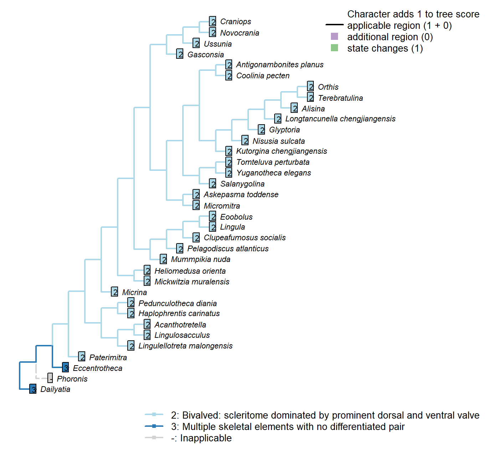
Character 2 : Sclerites: disposition
1: Single skeletal element
2: Bivalved: scleritome dominated by prominent dorsal and ventral valve
3: Multiple skeletal elements with no differentiated pair
Transformational character.
Taxa in the bivalved condition may bear small additional elements, such as the L-elements of Paterimitra or the stegidial / deltidial plates of certain brachiopods.
Paterimitra: Sclerites of Paterimitra are opposing symmetrical and fused, not separated like brachiopods.
Yuganotheca elegans: The conical element is taken to be homologous to the colleplax and thus part of the ventral valve.
Sclerites: Bivalved: Hinge line shape
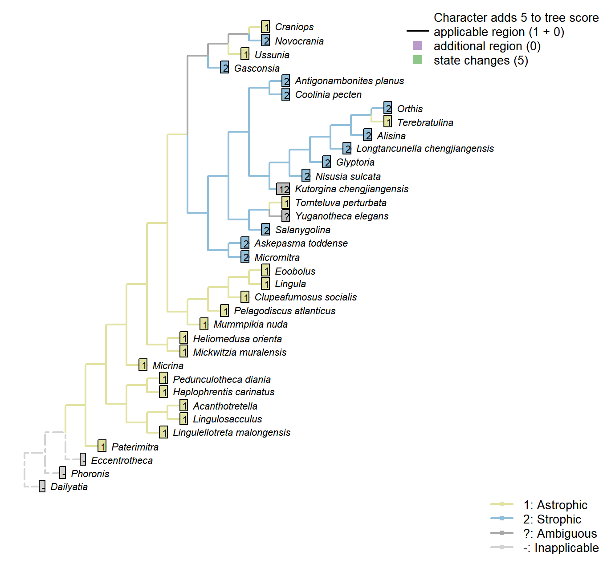
Character 3 : Sclerites: Bivalved: Hinge line shape
1: Astrophic
2: Strophic
Transformational character.
Micrina: See Holmer, Skovsted, Brock, Valentine, & Paterson (2008).
Tomteluva perturbata: “Tomteluvid taxa all have a strongly ventribiconvex, astrophic shell with a unisulcate commissure” – Streng, Butler, Peel, Garwood, & Caron (2016), p5.
Kutorgina chengjiangensis: Williams et al. (2000, p. 208) consider the hinge of Kutorgina to be stropic, whereas Bassett et al. (2001) argue for an astropic interpretation – whilst noting that the arrangement is prominently different from other astrophic taxa. We therefore code this taxon as ambiguous.
Longtancunella chengjiangensis: “Longtancunella has an oval to subcircular shell with a very short strophic hinge line” – Zhang et al. 2011.
Nisusia sulcata: “The strophic, articulated shells of the Kutorginata rotated on simple hinge mechanisms that are different from those of other rhynchonelliforms” (Williams et al. p. 208).
Novocrania: Craniides have a strophic posterior valve edge (Williams et al., 2007, table 39 on p. 2853).
Yuganotheca elegans: Not evident from fossil material; the possibility of a short strophic hinge line (as in Longtancunella) is difficult to discount.
Mickwitzia muralensis: non-strophic.
Sclerites: Bivalved: Apophyses

Character 4 : Sclerites: Bivalved: Apophyses
0: Absent
1: Present
Neomorphic character.
Many brachiopods, in addition to Micrina and others, bear tooth-like structures or processes that articulate the two primary valves.
Caution must be applied before taxa are coded as “absent”, as teeth can be subtle and may be overlooked.
Kutorginata don’t have teeth or dental sockets, but their shells are articulated by “two triangular plates formed by dorsal interarea, bearing oblique ridges on the inner sides” (Williams et al., 2000, p. 211); this simple hinge mechanism is different from other rhynchonelliforms (Williams et al., 2000, p. 208), but serves an equivalent purpose and is thus potentially homologous. We thus code kutorginids as present, using a subsequent character to capture difference in tooth morphology.
Tomteluva perturbata: Tomteluvids […] lack articulation structures such as teeth and sockets (Streng et al., 2016).
Mummpikia nuda: No articulation structures are evident; instead, the propareas are rotated inwards (Balthasar, 2008). The definition of Family Obolellidae in Williams et al. (2000) notes that articulation may be lacking or vestigial in the group.
Kutorgina chengjiangensis: “Articulation characterized by two triangular plates formed by dorsal interarea, bearing oblique ridges on the inner sides” – Williams et al. (2000), p. 211.
Nisusia sulcata: Pseudodont articulation: teeth formed by distal lateral extensions from the ventral pseudodeltidium – Holmer et al. 2018.
Alisina: “Strophic articulation with paired, ventral denticles, composed of secondary shell” – definition of family Trematobolidae in Williams et al. (2000).
Gasconsia: “Articulatory structure comprising ventral cardinal socket and dorsal hinge plate […] The shape of the shell probably correlates strongly with the unique type of articulation, which consists of a dorsal hinge plate that fits tightly into a cardinal socket in the ventral valve, with a concave homeodeltidium in the center of the ventral interarea” – Williams et al. (2000), p.184, concerning order Trimerellida.
Clupeafumosus socialis: No articulating processes evident or reported by Topper et al. (2013).
Ussunia: “articulatory structures poorly developed” – Williams et al. (2000), p. 192.
Mickwitzia muralensis: Not reported by or evident in Balthasar (2004).
Sclerites: Bivalved: Apophyses: Morphology

Character 5 : Sclerites: Bivalved: Apophyses: Morphology
1: Deltidiodont
2: Cyrtomatodont
3: Pseudodont
Transformational character.
Deltidiodont teeth are simple hinge teeth developed by the distal accretion of secondary shell; Cyrtomatodont teeth are knoblike or hook-shaped hinge teeth developed by differential secretion and resorption of the secondary shell (fig. 322 in Williams et al. (2000)).
Kutorginata (here represented by Kutorgina and Nisusia) don’t have teeth (apophyses) or dental sockets, but their shells are articulated by “two triangular plates formed by dorsal interarea, bearing oblique ridges on the inner sides” (Williams et al., 2000, p. 211); this simple hinge mechanism is different from other rhynchonelliforms [Williams et al. (2000), p.208; table 13 character 30], and is described as a “pseudodont articulation” (Holmer et al. 2018).
Micrina: The simple knob-like teeth of Micrina show no evidence of resprobtion or the hook-like shape that characterises Cyrtomatodont teeth.
Kutorgina chengjiangensis: “Articulation characterized by two triangular plates formed by dorsal interarea, bearing oblique ridges on the inner sides” – Williams et al. (2000), p. 211.
Nisusia sulcata: The ‘teeth’ are formed by the distal lateral extensions from the ventral
pseudodeltidium fitting into the ‘sockets’ on the inner side of the dorsal interarea (Holmer et al. 2018).
[Coded as “deltidiodont teeth absent” in Benedetto (2009).].
Terebratulina: Cyrtomatodont – see fig. 322 in Williams et al. (2000).
Antigonambonites planus: Coded as deltidiodont in Benedetto (2009).
Orthis: Coded as deltidiodont (in Eoorthis) in Benedetto (2009).
Glyptoria: Coded as deltidiodont in Benedetto (2009).
Sclerites: Bivalved: Apophyses: Dental plates

Character 6 : Sclerites: Bivalved: Apophyses: Dental plates
0: Absent
1: Present
Neomorphic character.
Williams (1997) (p362) write: “Teeth […] are commonly supported by a pair of variably disposed plates also built up exclusively of secondary shell and known as dental plates (Fig. 323.1, 323.3).”
Dewing (2001) elaborates: “Dental plates are near-vertical, narrow sheets of shell tissue between the anteromedian edge of the teeth and floor of the ventral valve. They are a composite structure, resulting from the growth of teeth over the ridge that bounds the ventral-valve muscle field.”
Williams et al. (2000) (p.201) write: “The denticles lack supporting structures in all Obolellida, but in Naukatida they are supported by an arcuate plate below the
interarea, the anterise (Fig. 119.3a)”.
The anterise is conceivably homologous with the dental plates, thus the presence of either is coded “present” for this character.
Coolinia pecten: Coded as present following Dewing (2001), who seems to use the term Strophomenoids to encompass Coolinia, and attests to the presence of dental plates.
Nisusia sulcata: Coded as absent in Benedetto (2009).
Antigonambonites planus: Coded as present (well developed) in Benedetto (2009).
Orthis: Coded as present (short and recessive, in Eoorthis) in Benedetto (2009).
Gasconsia: Coded ambiguous to reflect the possibility that the hinge plate in trimerellids is homologous to the dental plates of other taxa, and has replaced the teeth themselves as the primary articulatory mechanism (see Williams et al. (2000), p. 184, for details of the articulation).
Glyptoria: Coded as absent in Benedetto (2009).
Sclerites: Bivalved: Sockets
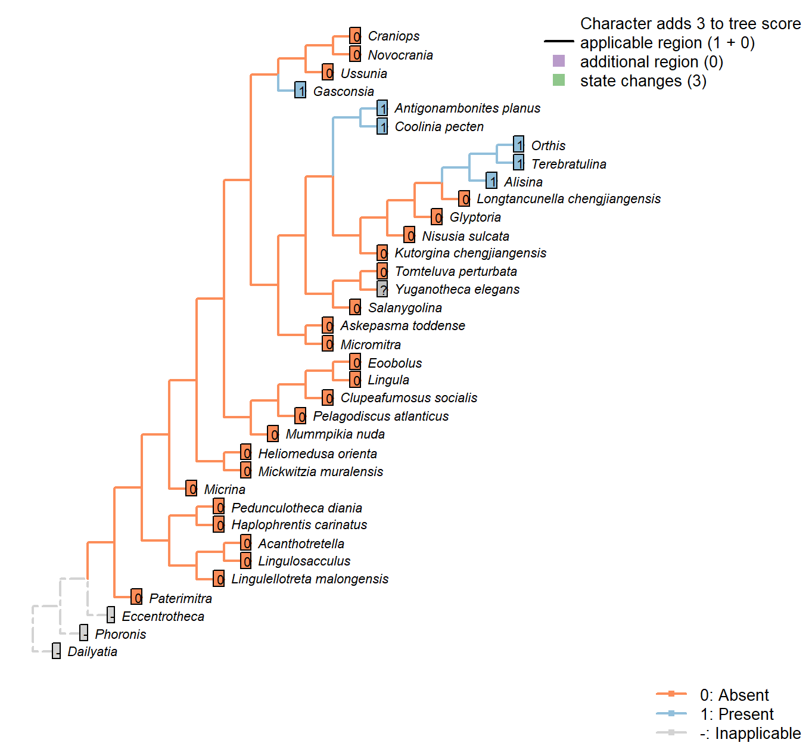
Character 7 : Sclerites: Bivalved: Sockets
0: Absent
1: Present
Neomorphic character.
Simplified from Bassett et al. (2001) character 16.
This character is independent of apophyses, as several taxa bear sockets without corresponding teeth; the function of these sockets is unknown.
See figs 323ff in Williams et al. (1997).
Tomteluva perturbata: Tomteluvids […] lack articulation structures such as teeth and sockets (Streng et al., 2016).
Nisusia sulcata: Coded as absent in Benedetto (2009).
Antigonambonites planus: Coded as present in Benedetto (2009).
Alisina: “bearing sockets, bounded by low ridges” – Williams et al. (2000).
Gasconsia: “Articulatory structure comprising ventral cardinal socket and dorsal hinge plate” – Williams et al. (2000), p. 184.
Glyptoria: Coded as absent in Benedetto (2009).
Ussunia: Following table 15 in Williams et al. (2000).
Mickwitzia muralensis: Not reported by or evident in Balthasar (2004).
Sclerites: Bivalved: Socket ridges

Character 8 : Sclerites: Bivalved: Socket ridges
0: Absent
1: Present
Neomorphic character.
After Bassett et al. (2001) character 17. May be difficult to distinguish from a brachiophore (see Fig 323 in Williams (1997)), so the two structures are not distinguished here.
Tomteluva perturbata: Tomteluvids […] lack articulation structures such as teeth and sockets (Streng et al., 2016).
Nisusia sulcata: Coded as absent in Benedetto (2009).
Antigonambonites planus: Coded as present in Benedetto (2009).
Alisina: “bearing sockets, bounded by low ridges” – Williams et al. (2000).
Glyptoria: Coded as absent in Benedetto (2009).
Sclerites: Bivalved: Enclosing filtration chamber

Character 9 : Sclerites: Bivalved: Enclosing filtration chamber
0: No filtration chamber, or open chamber
1: Shells close to form enclosed filtration chamber
Neomorphic character.
In crown-group brachiopods, the two primary shells close to form an enclosed filtration chamber. Further down the stem, taxa such as Micrina do not.
Sclerites: Bivalved: Commissure

Character 10 : Sclerites: Bivalved: Commissure
1: Rectimarginate
2: Uniplicate
3: Sulcate
Transformational character.
The anterior commissure can be rectimarginate (i.e. straight), uniplicate (i.e. median sulcus in ventral valve), or sulcate (with median sulcus in dorsal valve).
Kutorgina chengjiangensis: Following Appendix 2 in Williams et al. (1998).
Salanygolina: Following Appendix 2 in Williams et al. (1998).
Askepasma toddense: “ventral valve weakly to moderately sulcate” (Topper et al. 2013); a similar description is provided by Williams et al. (2000).
Micromitra: Following Appendix 2 in Williams et al. (1998).
Terebratulina: “Anterior commissure rectimarginate to uniplicate” – uniplicate in fig. 1425.1c of Williams et al. (2006).
Glyptoria: Following Appendix 2 in Williams et al. (1998).
Sclerites: Bivalved: Muscle scars: Ventral

Character 11 : Sclerites: Bivalved: Muscle scars: Ventral
0: Absent
1: Present
Neomorphic character.
After Bassett et al. (2001) character 6.
Micrina: Prominent ventral muscle scars – see e.g. Holmer et al. (2008), fig. 1f.
Alisina: Muscle scars scored based on Alisina comleyensis (Balthasar et al. 2001).
Mickwitzia muralensis: Scars absent; instead, cones ornament shell’s internal surface.
Sclerites: Bivalved: Muscle scars: Adjustor
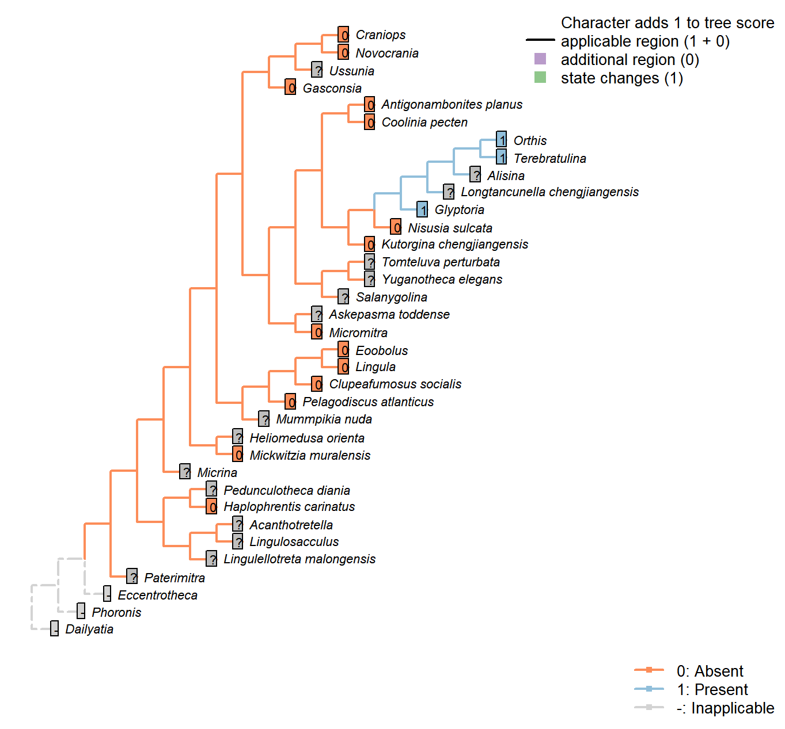
Character 12 : Sclerites: Bivalved: Muscle scars: Adjustor
0: Absent
1: Present
Neomorphic character.
After Bassett et al. (2001) character 7.
This character is contingent on the presence of a pedicle. Extreme caution must be used in inferring an absent state, as adjustor scars can be extremely difficult to distinguish from the adductor scars.
Alisina: Muscle scars scored based on Alisina comleyensis (Bassett et al., 2001).
The presence of an adjustor is marked NPA as it is not clear that a scar, if present, could be distinguished from the diminutive muscle scars present.
Gasconsia: No mention of an adjustor muscle in Gasconsia or Trimerellida more generally on pp. 184–185 of Williams et al. (2000), nor in discussion in Williams et al. (2007) (p. 2850). Coded as absent.
Clupeafumosus socialis: Not known in any acrotretid (Williams et al., 2000); not evident in Clupeafumosus (Topper et al. 2013).
Mickwitzia muralensis: Scars absent; instead, cones ornament shell’s internal surface.
Sclerites: Bivalved: Muscle scars: Dorsal adductor

Character 13 : Sclerites: Bivalved: Muscle scars: Dorsal adductor
1: Dispersed
2: Radially arranged
3: Quadripartite
Transformational character.
After Bassett et al. (2001) character 8, and Williams et al. [(1996), character 35; 2000, p. 160, character 54]
In the dorsal valve, the anterior and posterior adductor scars of articulated brachiopods form a single (quadripartite) muscle field (Williams et al., 2000, p. 201)
In contrast, the anterior and posterior scars of e.g. trimerellids have prominently separate attachment points, with anterior and posterior muscle fields clearly distinct, and coded as “dispersed”.
In e.g. kutorginates, adductor muscles are separated into left and right fields; the same is the case in lingulids, where there are more separate muscle groups and the left and right fields conspire to produce a radial arrangement; both of these configurations are scored as “radially arranged”.
Haplophrentis carinatus: Laterally dispersed, based on interpretation of Moysiuk et al. (2017), and consistent with general situation in hyoliths (see Dzik (1980)).
Coolinia pecten: “radially arranged adductor scars” – Bassett & Popov (2017), p1.
Salanygolina: “The dorsal valve of Salanygolina has a radial arrangement of adductor muscle scars and the scars of posteromedially placed internal oblique muscles, which are also characteristic of paterinates and chileates” – Holmer et al. (2009).
Heliomedusa orienta: Distinct anterior and posterior fields (Chen, Huang, & Chuang, 2007); coded as “dispersed” by Williams et al. (2000) in table 15.
Micromitra: Williams et al. (1998) code as “dispersed”, but have a less divided scheme of character states and disagree with other sources in some codings (e.g. Bassett et al. (2001), in Kutorginates). Williams et al. (2000) do not describe Micromitra musculature and we were unable to find any reliable description of the scars, so we code as “not presently available”.
Pelagodiscus atlanticus: Discinids scored as “open, quadripartite” by Williams et al. (1996).
Novocrania: Craniids scored as “open, quadripartite” by Williams et al. (1996).
Terebratulina: Coded as “grouped, quadripartite” by Williams et al. (1996).
Antigonambonites planus: Treatise.
Alisina: Following Williams et al. (2000) table 15 (their character 54).
Gasconsia: Following the coding of Williams et al. (2000), table 15.
Glyptoria: Scored as “dispersed” by Williams et al. (1998)… but then so is Kutorgina, which Bassett et al. (2001) score as radial.
Williams et al. (2000) state, for superfamily Protorthida, “dorsal adductor scars probably linear”, which fits in the category of “radial” employed herein – so that’s what we follow.
Clupeafumosus socialis: Quadripartite, following reconstruction of Williams (2000), fig. 51.
Ussunia: Following table 15 in Williams et al. (2000).
Mickwitzia muralensis: Scars absent; instead, cones ornament shell’s internal surface.
Sclerites: Bivalved: Muscle scars: Adductors: Position

Character 14 : Sclerites: Bivalved: Muscle scars: Adductors: Position
1: Oblique
2: At high angle
Transformational character.
Position of adductor muscles relative to commissural plane.
After Bassett et al. (2001) character 11.
Coolinia pecten: Not reported by Williams et al. (2000), nor Bassett & Popov (2017), nor explicitly by Dewing (2001).
Pelagodiscus atlanticus: Musculature considered essentially equivalent to Lingula by Williams et al. (2000), so Lingula coding followed here.
Gasconsia: See discussion under Trimerellida in Williams et al. (2000).
Mickwitzia muralensis: Scars absent; instead, cones ornament shell’s internal surface.
Eoobolus: “Eoobolus should have anterior and posterior adductors and a variety of oblique muscles which were probably arranged in criss-crossing pairs” – Balthasar 2009.
Sclerites: Bivalved: Muscle scars: Dermal muscles

Character 15 : Sclerites: Bivalved: Muscle scars: Dermal muscles
0: Absent or weakly developed
1: Strongly developed
Neomorphic character.
Based on character 11 in Zhang et al. (2014).
Well developed dermal muscles present in the body wall of recent lingulates, which are absent in all calcareous-shelled brachiopods. These muscles are responsible for the hydraulic shell-opening mechanism, and possibly present in all organophosphatic-shelled brachiopods, with the possible exception of the paterinates (Williams et al., 2000, p. 32).
Tomteluva perturbata: Though Williams et al. (2000, P.32) state that these muscles are absent in all carbonate-shelled brachiopods, their existence cannot be discounted with certainty in this taxon, which is therefore coded not presently available.
Mummpikia nuda: Though Williams et al. (2000, P.32) state that these muscles are absent in all carbonate-shelled brachiopods, their existence cannot be discounted with certainty in this taxon, which is therefore coded not presently available.
Coolinia pecten: According to the statement of Williams et al. (2000, P.32) that these muscle are absent in all carbonate- shelled brachiopods.
Kutorgina chengjiangensis: According to the statement of Williams et al. (2000, P.32) that these muscle are absent in all carbonate- shelled brachiopods, and the coding for kutorginids in Zhang et al. (2014).
Salanygolina: According to the statement of Williams et al. (2000, P.32) that these muscle are absent in all carbonate- shelled brachiopods.
Askepasma toddense: According to the statement of Williams et al. (2000, P.32) that the presence of these muscles in paterinates is uncertain.
Micromitra: Williams et al. (2000, P.32) are uncertain about the presence of these muscles in the paterinates. Zhang et al. (2014) code absence in Paterinida, but without specifying evidence; we follow their coding here.
Nisusia sulcata: According to the statement of Williams et al. (2000, P.32) that these muscle are absent in all carbonate- shelled brachiopods.
Pelagodiscus atlanticus: Musculature considered essentially equivalent to Lingula by Williams et al. (2000), so Lingula coding followed here.
Novocrania: Following Zhang et al. (2014), and the statement of Williams et al. (2000) that such muscles are absent in all calcite-shelled brachiopods.
Terebratulina: Williams et al. (2000, P.32) state that these muscles are absent in all carbonate-shelled brachiopods.
Antigonambonites planus: According to the statement of Williams et al. (2000, P.32) that these muscle are absent in all carbonate- shelled brachiopods.
Alisina: According to the statement of Williams et al. (2000, P.32) that these muscle are absent in all carbonate- shelled brachiopods.
Orthis: According to the statement of Williams et al. (2000, P.32) that these muscle are absent in all carbonate- shelled brachiopods.
Gasconsia: According to the statement of Williams et al. (2000, P.32) that these muscle are absent in all carbonate- shelled brachiopods.
Glyptoria: According to the statement of Williams et al. (2000, P.32) that these muscle are absent in all carbonate- shelled brachiopods.
Clupeafumosus socialis: This character is coded based on the score of Acrotreta in Zhang et al. (2014), and statement in Williams et al. (2000, P.32).
Eoobolus: Not remarked upon by Balthasar (2009).
Sclerites: Bivalved: Muscle scars: Unpaired median (levator ani)

Character 16 : Sclerites: Bivalved: Muscle scars: Unpaired median (levator ani)
0: Absent
1: Present
Neomorphic character.
The levator ani is a diminutive unpaired medial muscle found in certain calcitic brachiopods [Williams et al. (2000); see fig. 89, character 34 in table 13].
Coolinia pecten: Not reported in Dewing (2001).
Kutorgina chengjiangensis: Following table 13 in Williams et al. (2000).
Heliomedusa orienta: Poor preservation of minor muscle scars noted by Chen et al. (2007).
Nisusia sulcata: Following table 13 in Williams et al. (2000).
Pelagodiscus atlanticus: Musculature considered essentially equivalent to Lingula by Williams et al. (2000), so Lingula coding followed here.
Novocrania: Following table 13 in Williams et al. (2000) (for Novocrania).
Alisina: Following table 13 in Williams et al. (2000).
Gasconsia: Following table 13 in Williams et al. (2000).
Craniops: See fig. 90 in Williams et al. (2000).
Ussunia: Following table 15 in Williams et al. (2000).
Mickwitzia muralensis: Scars absent; instead, cones ornament shell’s internal surface.
Sclerites: Bivalved: Muscle scars: Dorsal diductor
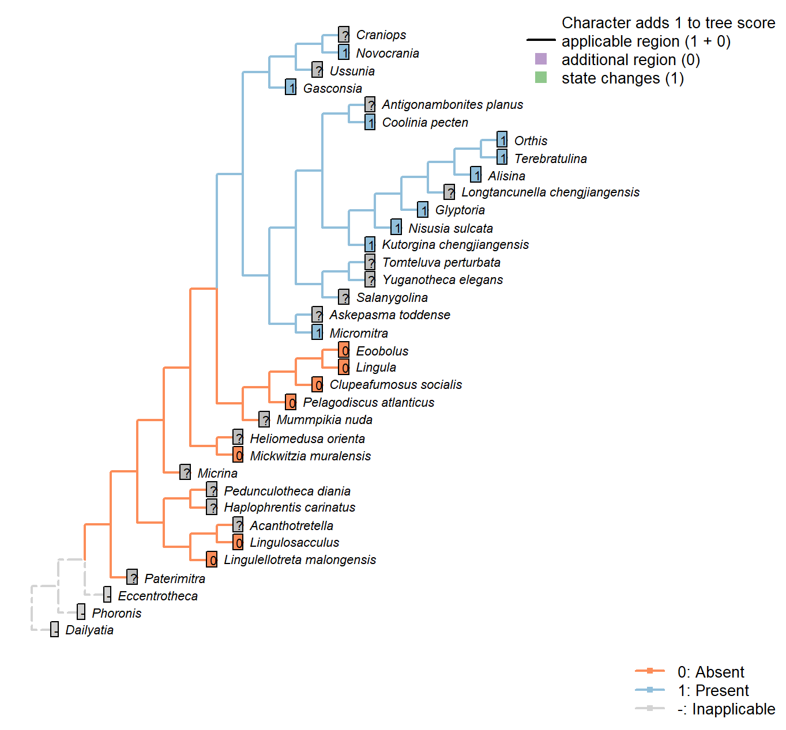
Character 17 : Sclerites: Bivalved: Muscle scars: Dorsal diductor
0: Absent
1: Present
Neomorphic character.
After Bassett et al. (2001) character 9.
Acanthotretella: Not observable in Acanthotretella itself, so coded as ambiguous – though it is likely based on the anticipated phylogenetic affinities of Acanthotretella that the muscles are absent.
Gasconsia: Internal oblique muscles serve as diductors.
Clupeafumosus socialis: Not reported by Topper et al. (2013), nor reconstructed in generic Acrotretid by Williams et al. (2000).
Sclerites: Bivalved: Muscle scars: Dorsal diductor: position
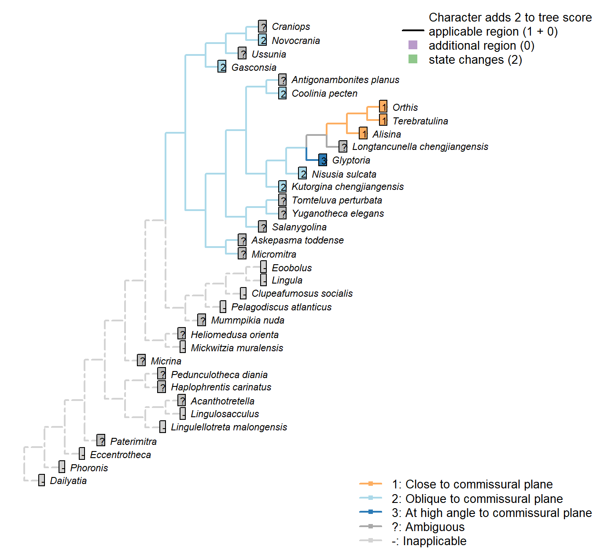
Character 18 : Sclerites: Bivalved: Muscle scars: Dorsal diductor: position
1: Close to commissural plane
2: Oblique to commissural plane
3: At high angle to commissural plane
Transformational character.
After Bassett et al. (2001) character 10.
Sclerites: Dorsal valve: Growth direction

Character 19 : Sclerites: Dorsal valve: Growth direction
1: Holoperipheral
2: Mixoperipheral
3: Hemiperipheral
Transformational character.
See Fig. 284 in Williams et al. (1997).
The growth direction dictates the attitude of the cardinal area relative to the hinge, which does not therefore represent an independent character.
Crudely put, if, viewed from a dorsal position, the umbo falls within the outer margin of the shell, growth is holoperipheral; if it falls outside the margin, it is mixoperipheral; if it falls exactly on the margin, it is hemiperipheral.
Micrina: See Holmer et al. (2008).
Paterimitra: S2 and L sclerites are clearly holoperipheral. See Larsson et al. (2014), fig. 2.
Heliomedusa orienta: “holoperipheral growth in dorsal valve” – Williams et al. (2007).
The insinuation from Zhang et al. (2009) is that Chen et al. (2007) misidentify the dorsal valve as the ventral valve.
Clupeafumosus socialis: Appears hemiperipheral in fig. 3 in Topper et al. (2013), though bordering on holoperipheral, so scored as ambiguous.
Craniops: “both valves with growth holoperipheral” – Williams et al. (2000) p164.
Ussunia: Following description of order in Williams et al. (2000).
Sclerites: Dorsal valve: Posterior surface: Differentiated
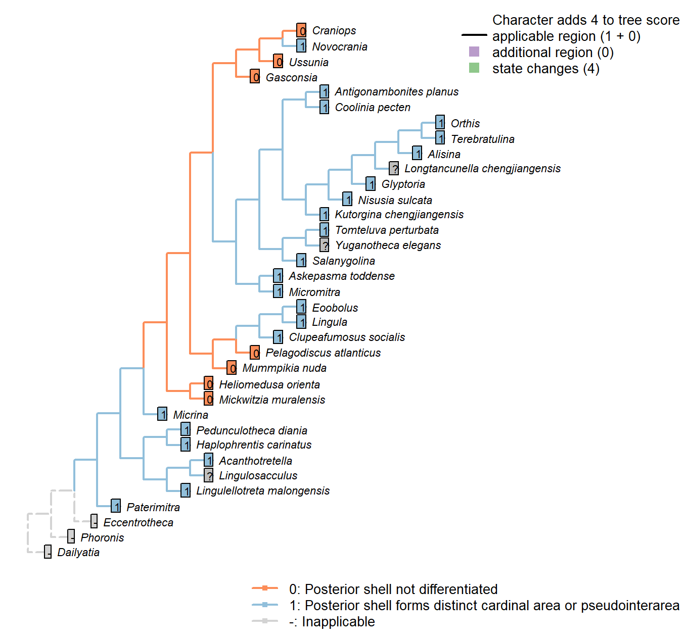
Character 20 : Sclerites: Dorsal valve: Posterior surface: Differentiated
0: Posterior shell not differentiated
1: Posterior shell forms distinct cardinal area or pseudointerarea
Neomorphic character.
In shells that grow by mixoperipheral growth, the triangular area subtended between each apex and the posterior ends of the lateral margins is termed the cardinal area. In shells with holoperipheral growth, a flattened surface on the posterior margin of the valve is termed a pseudointerarea (paraphrasing Williams (1997)).
In order for this character to be independent of a shell’s growth direction, we do not distinguish between a “cardinal area”, “interarea” or “pseudointerarea”.
Pedunculotheca diania: Pseudointerarea.
Micrina: = Sellate sclerite duplicature (Holmer et al., 2008).
Paterimitra: Pseudointerarea.
Haplophrentis carinatus: A very short pseudointerarea appears to be present (Moysiuk et al., 2017).
Lingulosacculus: Unclear from fossil material.
Tomteluva perturbata: Cardinal area (interarea) present.
Mummpikia nuda: Absent.
Coolinia pecten: Cardinal area (interarea) present.
Kutorgina chengjiangensis: Cardinal area (interarea) present.
Salanygolina: Cardinal area (interarea) present.
Lingula: Pseudointerarea present, following Williams et al. (2000), table 6.
Acanthotretella: Pseudointerarea present, following Siphonotretidae coding in Williams et al. (2000), table 6.
Heliomedusa orienta: Pseudointerea in ventral valve, but not dorsal valve (Williams et al., 2000, p. 2007).
Longtancunella chengjiangensis: Zhang et al. (2011) note that “all evidence of a pseudointerarea is lacking”, but the two-dimensional preservation style of Chengjiang material makes details of dorsal valve difficult to distinguish, and the possibility of a diminutive pseudointerarea cannot be excluded with total confidence.
Lingulellotreta malongensis: Pseudointerarea present, following Williams et al. (2000), table 6.
Askepasma toddense: Well-defined pseudointerarea (Williams et al., 2000, p153).
Micromitra: “Dorsal pseudointerarea usually well defined, low, anacline to catacline” – Williams et al. (2000).
Nisusia sulcata: Cardinal area (interarea) present – with reference to Holmer et al. (2018).
Pelagodiscus atlanticus: Absent, following entry for Discinidae in Williams et al. (2000), table 6.
Novocrania: Pseudointerarea.
Terebratulina: Interarea present.
Antigonambonites planus: Cardinal area (interarea) present.
Alisina: Cardinal area (interarea) present.
Orthis: Cardinal area (interarea) present.
Glyptoria: Cardinal area (interarea) present.
Clupeafumosus socialis: Pseudointerarea present; figured by Topper et al. (2013), fig. 3j.
Yuganotheca elegans: A differentiated region is not obvious in fossil material or its reconstruction (Z.-F. Zhang et al., 2014), but the two-dimensional preservation style of Chengjiang material makes details of dorsal valve difficult to distinguish, and the possibility of a diminutive pseudointerarea cannot be excluded with confidence.
Craniops: “Only some craniopsids (Lingulapholis, Pseudopholidops [not Craniops]) have well-developed pseudointerareas.” – Williams et al. (2000).
Ussunia: Following table 15 in Williams et al. (2000).
Mickwitzia muralensis: Shell flat.
Sclerites: Dorsal valve: Differentiated posterior surface: Morphology
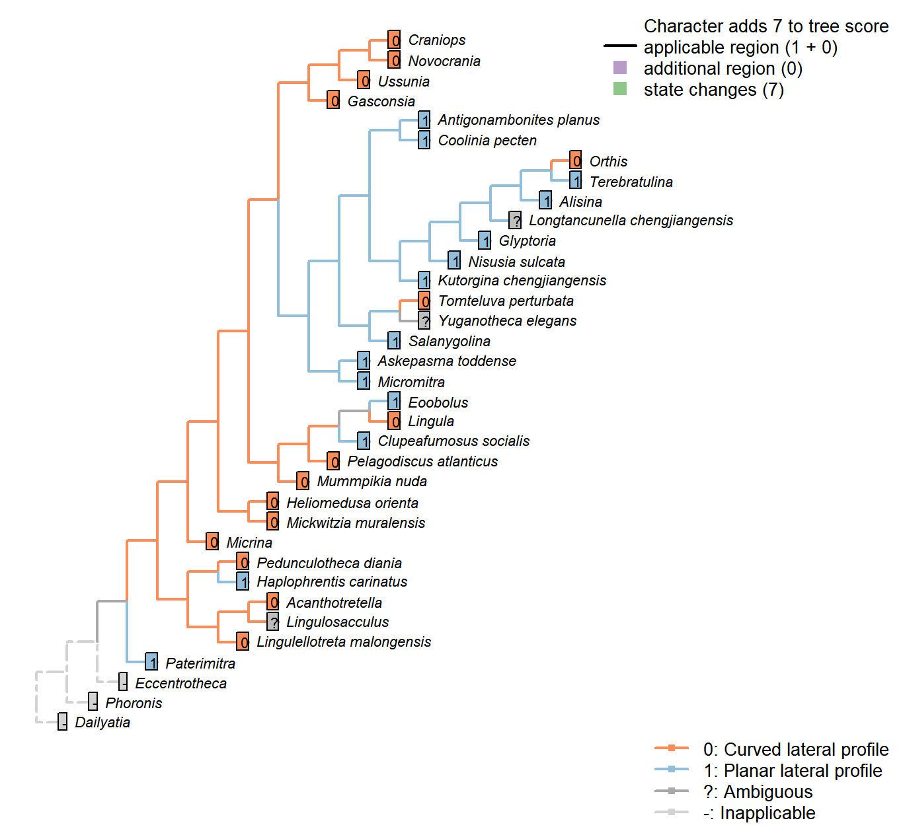
Character 21 : Sclerites: Dorsal valve: Differentiated posterior surface: Morphology
0: Curved lateral profile
1: Planar lateral profile
Neomorphic character.
It is possible for a cardinal area or pseudointerarea to be distinct from the anterior part of the shell, yet to remain curved in lateral profile.
Taking an undifferentiated posterior margin as primitive, the primitive condition is curved – flattening of the posterior margin represents an additional modification that can only occur once the posterior margin is differentiated.
Mummpikia nuda: Posterior surface cannot be flat if it is not differentiated.
Heliomedusa orienta: Posterior surface cannot be flat if it is not differentiated.
Micromitra: Essentially straight; see fig. 3.7 in Ushatinskaya (2016).
Pelagodiscus atlanticus: Posterior surface cannot be flat if it is not differentiated.
Gasconsia: Posterior surface cannot be flat if it is not differentiated.
Clupeafumosus socialis: Truncated but essentially planar surface; see e.g. p196 of Topper et al. 2013.
Ussunia: Posterior surface cannot be flat if it is not differentiated.
Mickwitzia muralensis: Posterior surface cannot be flat if it is not differentiated.
Eoobolus: Essentially planar.
Sclerites: Dorsal valve: Posterior surface: Medial groove

Character 22 : Sclerites: Dorsal valve: Posterior surface: Medial groove
0: Absent
1: Present
Neomorphic character.
Following character 29 in Williams et al. (2000), table 9 (which relates to pseudointerarea).
Acanthotretella: The dorsal pseudointerarea is poorly preserved, but appears to have a median groove (Holmer & Caron, 2006).
Heliomedusa orienta: “A posteriorly protruding dorsal pseudointerarea with no median groove and no flexure lines” – Chen et al. (2007).
Lingulellotreta malongensis: Dorsal pseudointerarea with wide, concave median groove and short propareas" – Williams et al. (2000).
Clupeafumosus socialis: Present; figured by Topper et al. (2013), fig. 3j.
Eoobolus: Prominent medial groove.
Sclerites: Dorsal valve: Posterior surface: Notothyrium

Character 23 : Sclerites: Dorsal valve: Posterior surface: Notothyrium
0: Absent
1: Present
Neomorphic character.
A notothyrium is an opening in an interarea that accommodates the pedicle, and may be filled with plates.
Longtancunella chengjiangensis: No evidence or report of an opening at the hinge line in fossil material in Zhang et al. 2007, 2011.
Sclerites: Dorsal valve: Posterior surface: Notothyrium: Shape

Character 24 : Sclerites: Dorsal valve: Posterior surface: Notothyrium: Shape
1: Parallel-sided cleft
2: Triangular
Transformational character.
A notothyrium is an opening in an interarea that accommodates the pedicle, and may be filled with plates.
A simplification of character 5 in Bassett et al. (2001).
Sclerites: Dorsal valve: Posterior surface: Notothyrium: Chilidial plates

Character 25 : Sclerites: Dorsal valve: Posterior surface: Notothyrium: Chilidial plates
1: Open
2: Covered by chilidial plates
Transformational character.
A notothyrium may be open or covered by a chilidium or two chilidial plates.
No included taxa exhibit more than one chilidial plate.
Transformational as it is not self-evident whether the ancestral taxon had an open or closed notothyrium.
Sclerites: Dorsal valve: Notothyrial platform
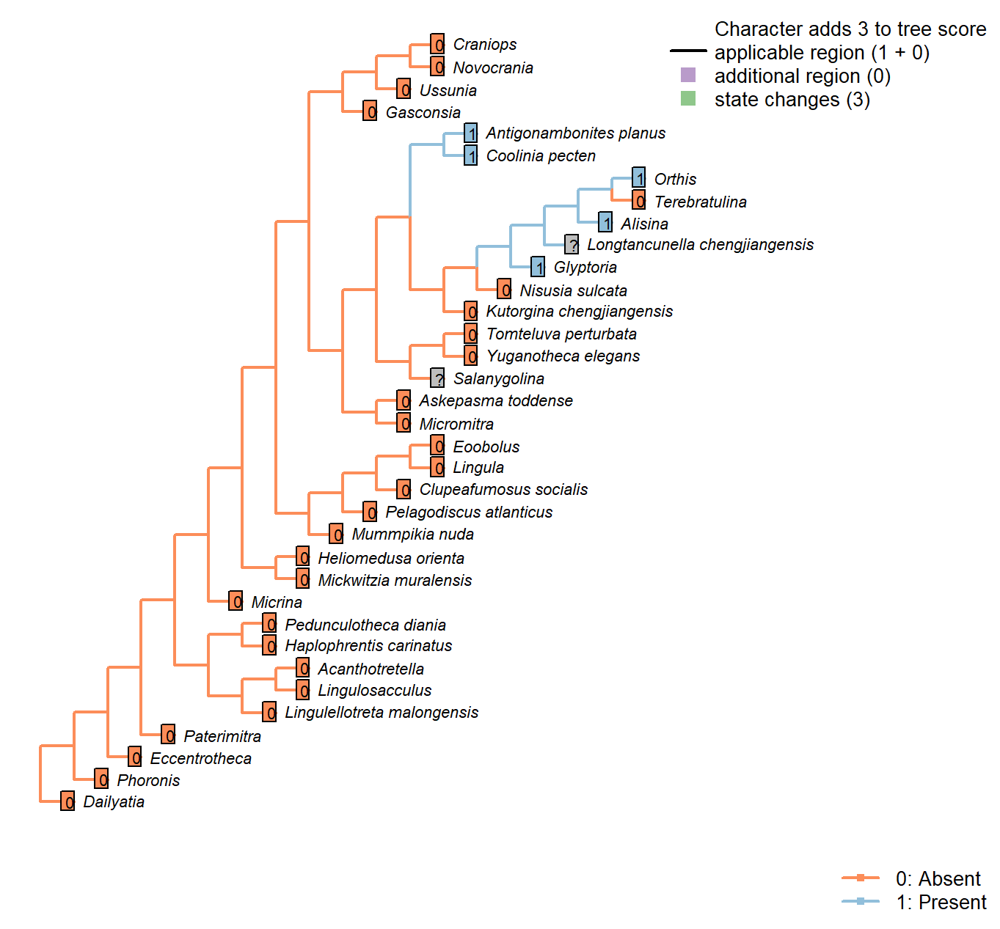
Character 26 : Sclerites: Dorsal valve: Notothyrial platform
0: Absent
1: Present
Neomorphic character.
After Bassett et al. (2001) character 12.
The presence or absence of a notothyrial platform, which often serves as an attachment point for the diductors in a similar fashion to the cardinal processes, is independent of the presence of a notothyrium.
Coolinia pecten: Referred to as the “posterior platform” in Dewing (2001).
Kutorgina chengjiangensis: “Dorsal diductor scars impressed on floor of notothyrial cavity”: Williams et al. (2000), regarding Kutorginata.
Bassett et al. (2001) score as absent in Table 18.1.
Nisusia sulcata: Bassett et al. (2001) score as absent in Table 18.1.
“Dorsal diductor scars impressed on floor of notothyrial cavity”: Williams et al. (2000), regarding Kutorginata.
Alisina: Bassett et al. (2001) score as present in Table 18.1.
Glyptoria: Bassett et al. (2001) score as present in Table 18.1.
Ussunia: “Visceral platforms absent in both valves” – Williams et al. (2000), p. 192.
Sclerites: Dorsal valve: Cardinal processes
Character 27 : Sclerites: Dorsal valve: Cardinal processes
0: Absent
1: Present
Neomorphic character.
After Bassett et al. (2001) character 13.
Cardinal processes are unlikely to be homologous with the notothyrial platform, even if their function is similar.
Longtancunella chengjiangensis: Not evident, and ought arguably to be discernable if present given the quality of preservation.
Clupeafumosus socialis: Not reported by Topper et al. (2013).
Sclerites: Dorsal valve: Medial septum
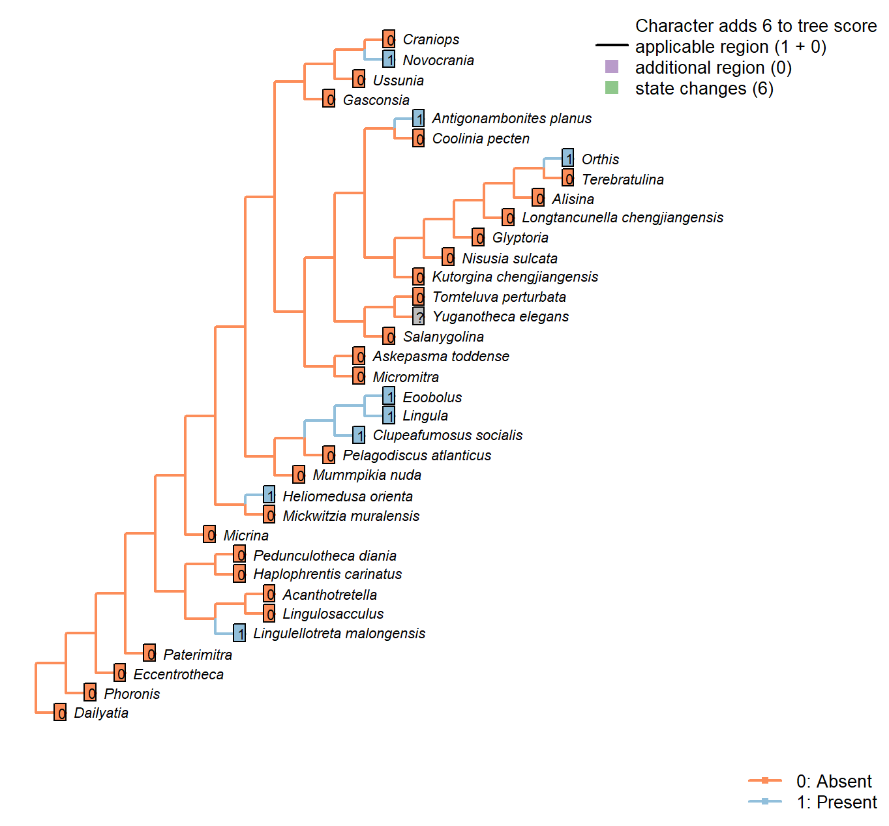
Character 28 : Sclerites: Dorsal valve: Medial septum
0: Absent
1: Present
Neomorphic character.
The dorsal valve of many taxa is exhibits a septum or process (or myophragm) along the medial line. See character 25 in Benedetto (2009).
Mummpikia nuda: See pl. 2 panel 6 in Balthasar (2008).
Kutorgina chengjiangensis: Absent – fig. 129.1f in Williams et al. (2000).
Heliomedusa orienta: Reported on ‘ventral’ valve by Chen et al. (2007); we consider their ‘ventral’ valve to be the dorsal valve.
The structure is clearly figured, contra its coding as absent in Williams et al. (2000) and its lack of mention in Williams et al. (2007) or Z.-F. Zhang et al. (2009).
Lingulellotreta malongensis: Very weakly developed but seemingly present between muscle scars in Lingulellotreta, more prominent in Aboriginella (also Lingulellotretidae) (Williams et al., 2000, fig. 34).
Nisusia sulcata: Fig. 125 in Williams et al. (2000).
Novocrania: Median process evident: Williams et al. (2000) fig. 100.2a, d.
Antigonambonites planus: Weakly developed septum evident in internal cast: Williams et al. (2000), fig. 508.2e.
Orthis: Short medial process (“low median ridge”, p. 724) present in dorsal valve; see Fig. 523.3b in Williams et al. (2000).
Glyptoria: Neither evident nor reported in Williams et al. (2000).
Clupeafumosus socialis: Prominent process evident (Topper et al., 2013).
Ussunia: Following char 42 in table 15 in Williams et al. (2000).
Eoobolus: A “median projection” is present (fig. 4g in Balthasar 2009).
Sclerites: Ventral valve: Relative size
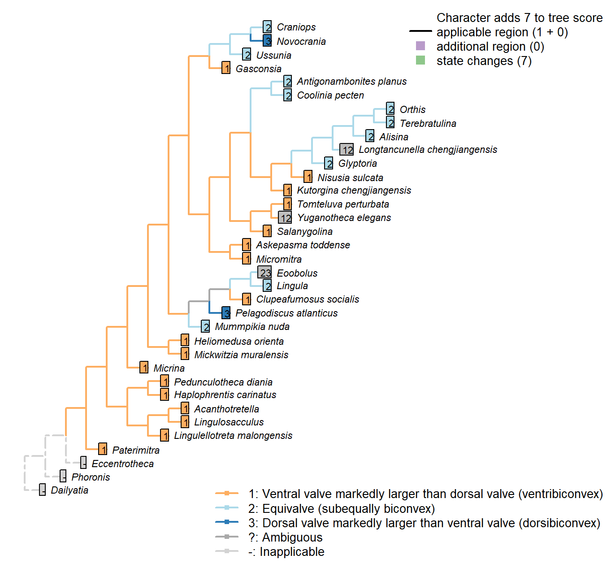
Character 29 : Sclerites: Ventral valve: Relative size
1: Ventral valve markedly larger than dorsal valve (ventribiconvex)
2: Equivalve (subequally biconvex)
3: Dorsal valve markedly larger than ventral valve (dorsibiconvex)
Transformational character.
In many brachiopods, the valves are closely similar in size; in others, the ventral valve is markedly larger than the dorsal, on account of being more convex. Marginal cases are treated as ambiguous for the relevant states.
Mummpikia nuda: Aside from hinge, valves similar in convexity and size (Balthasar, 2008).
Kutorgina chengjiangensis: Ventral valve larger (see Williams et al. (2000), fig. 125.).
Heliomedusa orienta: Ventral valve larger than the dorsal valve (Z.-F. Zhang et al., 2009, p. 659).
Longtancunella chengjiangensis: The ventral valve is somewhat, but not markedly, larger than the dorsal; as such, this character is coded ambiguous for equivalve/ventral valve larger.
Nisusia sulcata: Ventral valve larger (see Williams et al. (2000), fig. 126.).
Antigonambonites planus: Broadly equivalve – see Williams et al. (2000) fig. 508.2c.
Gasconsia: Convexiplane (Williams et al., 2000, p. 187).
Yuganotheca elegans: The ventral valve is somewhat, but not markedly, larger than the dorsal; as such, this character is coded ambiguous for equivalve/ventral valve larger.
Craniops: “Shell subequally biconvex” – WIlliams et al. 2000.
Ussunia: Subequally biconvex (Williams et al., 2000, p. 192).
Eoobolus: “Eoobolus is biconvex”, but in the amended diagnosis,Balthasar descriped it as “shell inequivalved, dorsibiconvex”.
Sclerites: Ventral valve: Growth direction

Character 30 : Sclerites: Ventral valve: Growth direction
1: Holoperipheral
2: Mixoperipheral
3: Hemiperipheral
Transformational character.
See Fig. 284 in Williams et al. (1997) for depiction of terms.
The growth direction dictates the attitude of the cardinal area relative to the hinge, which does not therefore represent an independent character.
Crudely put, if, viewed from a dorsal position, the umbo falls within the outer margin of the shell, growth is holoperipheral; if it falls outside the margin, it is mixoperipheral; if it falls exactly on the margin, it is hemiperipheral.
Paterimitra: The apical flange notwithstanding, the umbo of the S1 sclerite is posterior of the hinge line and the posterior edge of the lateral plate – see Larsson et al. (2014), fig. 2a, c.
Heliomedusa orienta: Williams et al. (2000, p. 2007) reconstruct mixoperipheral growth in the ventral valve (though Chen et al. (2007) reconstruct the valves the other way round, i.e. it is the ventral valve that grows holoperipherally, and the dorsal mixoperipherally).
Clupeafumosus socialis: Inferred from Topper et al. (2013).
Ussunia: Following description of order in Williams et al. (2000).
Sclerites: Ventral valve: Posterior surface: Differentiated

Character 31 : Sclerites: Ventral valve: Posterior surface: Differentiated
0: Posterior surface of shell not differentiated
1: Posterior surface of shell forms distinct cardinal area or pseudointerarea
Neomorphic character.
In shells that grow by mixoperipheral growth, the triangular area subtended between each apex and the posterior ends of the lateral margins is termed the cardinal area. In shells with holoperipheral growth, a flattened surface on the posterior margin of the valve is termed a pseudointerarea (paraphrasing Williams (1997)).
In order for this character to be independent of a shell’s growth direction, we do not distinguish between a “cardinal area”, “interarea” or “pseudointerarea”.
Paterimitra: Triangular notch and subapical flange.
Lingulosacculus: The conical valve is interpreted as the ventral valve with an extended pseudointerarea.
Tomteluva perturbata: Interarea present.
Mummpikia nuda: Balthasar (2008) interprets a pseudointerarea as being present – e.g. p273, “Of particular interest is the vault that bridges the most anterior portion of the ventral pseudointerarea and raises it above the visceral platform.”; “This pattern is reversed in the ventral valves of M. nuda, where the anterior projection of the pedicle groove is raised above the valve floor whereas the lateral parts of pseudointerarea are not”.
Coolinia pecten: Interarea present.
Kutorgina chengjiangensis: Interarea present.
Salanygolina: Interarea present.
Heliomedusa orienta: Zhang et al. (2009) report a moderate to somewhat developed ventral pseudointerarea, confirmed by Williams et al. (2007).
Longtancunella chengjiangensis: Though “all evidence of a pseudointerarea is lacking” – Zhang et al. 2011 – the region of the shell between the strophic hinge line and the colleplax (fig. 2 in Zhang et al. 2011) is distinct from the rest of the shell; the ends of the strophic hinge line are marked by prominent nicks in the shell margin. Longtancunella is therefore coded as having a differentiated posterior surface.
Nisusia sulcata: Interarea present.
Terebratulina: Interarea.
Antigonambonites planus: Interarea present.
Alisina: Interarea present.
Orthis: Interarea present.
Gasconsia: The region corresponding to the ventral (pseudo)interarea is described as a “trimerellid ventral cardinal area” by Williams et al. (2000, p. 162), who code both an interarea and a pseudointerarea as absent in trimerellids.
Glyptoria: Interarea present.
Clupeafumosus socialis: Described by Topper et al. (2013).
Ussunia: Following char 17 in table 15 in Williams et al. (2000).
Mickwitzia muralensis: What Balthasar (2004) terms an interarea is, in the terminology employed herein, a pseudointerarea.
Sclerites: Ventral valve: Posterior margin growth direction
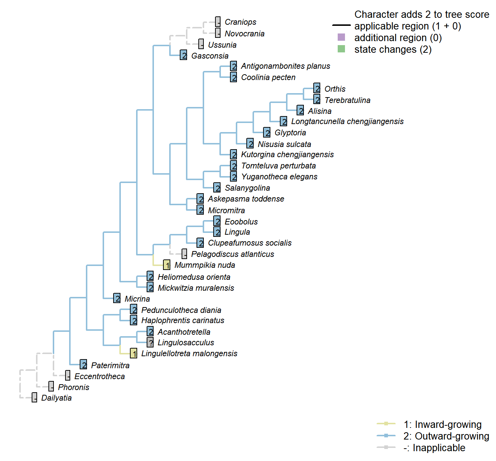
Character 32 : Sclerites: Ventral valve: Posterior margin growth direction
1: Inward-growing
2: Outward-growing
Transformational character.
Balthasar (2008) notes an inward-growing posterior margin of the pseudointerarea as potentially linking Mummpikia with the linguliform brachiopods.
The posterior margin can only grow inwards if it is differentiated from the anterior margin; else the entire shell would grow in on itself.
Mummpikia nuda: Balthasar (2008) interprets an inward-growing posterior margin of the pseudointerarea – e.g. p273, “Of particular interest is the vault that bridges the most anterior portion of the ventral pseudointerarea and raises it above the visceral platform […] An inward-growing posterior margin is otherwise known only from the pseudointerareas of linguliform brachiopods”.
Lingulellotreta malongensis: Transverse cross section of ventral pseudointerarea concave.
Clupeafumosus socialis: See Topper et al. (2013).
Sclerites: Ventral valve: Posterior surface: Planar
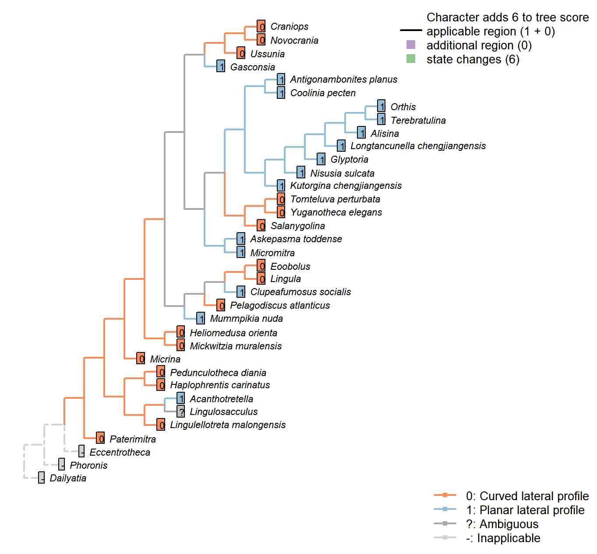
Character 33 : Sclerites: Ventral valve: Posterior surface: Planar
0: Curved lateral profile
1: Planar lateral profile
Neomorphic character.
It is possible for a cardinal area or pseudointerarea to be distinct from the anterior part of the shell, yet to remain curved in lateral profile.
Taking an undifferentiated posterior margin as primitive, the primitive condition is curved – flattening of the posterior margin represents an additional modification that can only occur once the posterior margin is differentiated.
A flat and triangular interarea links Mummpikia with the Obolellidae (Balthasar, 2008) – but all included taxa have triangular interareas, so this is not listed as a separate character.
Acanthotretella: ventral pseudointerareas are most similar to those found within the Order Siphonotretida.
Longtancunella chengjiangensis: Flattened, reflecting the strophic hinge line.
Lingulellotreta malongensis: Transverse cross section of ventral pseudointerarea concave.
Micromitra: Essentially planar; see fig. 6 in Ushatinskaya (2016).
Clupeafumosus socialis: “Ventral pseudointerarea is gently procline and is flat in lateral profile”.
Eoobolus: Some curvature retained.
Sclerites: Ventral valve: Posterior surface: Extent

Character 34 : Sclerites: Ventral valve: Posterior surface: Extent
1: Low
2: High
Transformational character.
Distinguishes taxa whose ventral valve is essentially flat from those that are essentially conical.
Coolinia pecten: See fig. 485 in Williams et al. (2000).
Salanygolina: “Ventral pseudointerarea well defined, high, nearly flat, apsacline” – Williams et al. (2000), p. 156.
Nisusia sulcata: Scored High in data matrix of Benedetto (2009).
Antigonambonites planus: Scored High in data matrix of Benedetto (2009).
Orthis: Scored ‘Low’ for Eoorthis by Benedetto (2009); assumed same in Orthis.
Gasconsia: “ventral cardinal interarea low, apsacline, with narrow, poorly defined homeodeltidium” – Williams et al. (2000), p. 186.
Clupeafumosus socialis: Entire valve length – see schematic in Williams et al. (21997), fig. 286.
Sclerites: Ventral valve: Posterior surface: Delthyrium

Character 35 : Sclerites: Ventral valve: Posterior surface: Delthyrium
0: Absent
1: Present
Neomorphic character.
A delthyrium is an opening in an interarea or pseudointerarea that accommodates the pedicle, and may be filled with plates.
Micrina: Opening inferred by Holmer et al. (2008).
Longtancunella chengjiangensis: Unclear: a narrow ridge that may correspond to a pseudodeltidium evident in fig 2a and sketched in fig. 2c is not discussed in the text of Zhang et al. 2011, so the delthyrial region is coded as ambiguous.
Askepasma toddense: Small notch present at base of parallel-sided homeodeltidium – See Williams et al. (2000).
Glyptoria: “Delthyrium and notothyrium open, wide” – Cooper (1976).
Yuganotheca elegans: Details of the hinge region are unclear due to the flattened and overprinted nature of fossil preservation.
Mickwitzia muralensis: A delthyrium is present in young individuals (Balthasar, 2004).
Sclerites: Ventral valve: Posterior surface: Delthyrium: Shape

Character 36 : Sclerites: Ventral valve: Posterior surface: Delthyrium: Shape
1: Parallel sided
2: Triangular
Transformational character.
A parallel-sided delthyrium links Mummpikia with the Obolellidae (Balthasar, 2008).
This character has the capacity for further resolution, but this is unlikely to affect the results of the present study.
Sclerites: Ventral valve: Posterior surface: Delthyrium: Cover

Character 37 : Sclerites: Ventral valve: Posterior surface: Delthyrium: Cover
1: Open
2: Covered, at least in part
Transformational character.
An open delthyrium links Mummpikia with the Obolellidae (Balthasar, 2008).
The delthyrial opening can be covered by one or more deltidial plates, or a pseudodeltitium.
A convex pseudodeltidium completely covers the delthyrium in Coolinia.
Paterimitra: Covered by subaical flange, in part.
Nisusia sulcata: “Covered only apically by a small convex pseudodeltitium” – Holmer et al. 2018.
Glyptoria: Coded as open by Williams et al. (1998).
Sclerites: Ventral valve: Posterior surface: Delthyrium: Cover: Extent

Character 38 : Sclerites: Ventral valve: Posterior surface: Delthyrium: Cover: Extent
1: Covered only partially; partially open
2: Completely covered
Transformational character.
Micrina: Remains somewhat open.
Nisusia sulcata: A well-defined pseudo-deltidium […] closes only the apical part of
the delthyrium (Rowell & Caruso, 1985).
Sclerites: Ventral valve: Posterior surface: Delthyrium: Cover: Identity
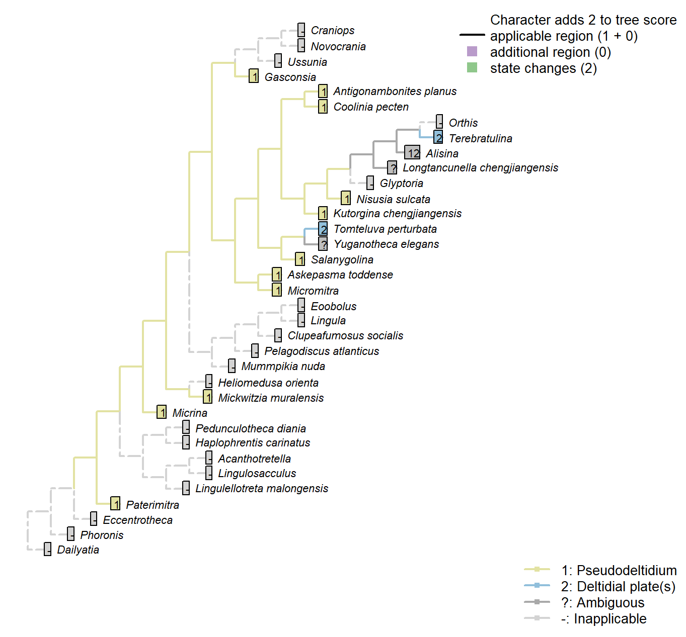
Character 39 : Sclerites: Ventral valve: Posterior surface: Delthyrium: Cover: Identity
1: Pseudodeltidium
2: Deltidial plate(s)
Transformational character.
This character has the capacity for further resolution (one or more deltidial plates), but this is unlikely to affect the results of the present study.
The pseudodelthyrium is also referred to as a homeodeltidium.
Micrina: “Ventral valve convex with apsacline interarea bearing delthyrium, covered by a convex pseudodeltidium” – Homer et al. 2008.
Lingulellotreta malongensis: The subapical flange of the Paterimitra S1 sclerite has been homologised with the ventral homeodeltidium of Micromitra (Larsson et al., 2014).
Alisina: Stated as “concave pseudodeltidium with median plication” – Williams et al. (2000)
Coded as “Pseudodeltidium: Covered by concave plate” by Bassett et al. (2001).
Mickwitzia muralensis: Termed a homoedeltidium by Balthasar (2004).
Sclerites: Ventral valve: Posterior surface: Delthyrium: Pseudodeltidium: Shape
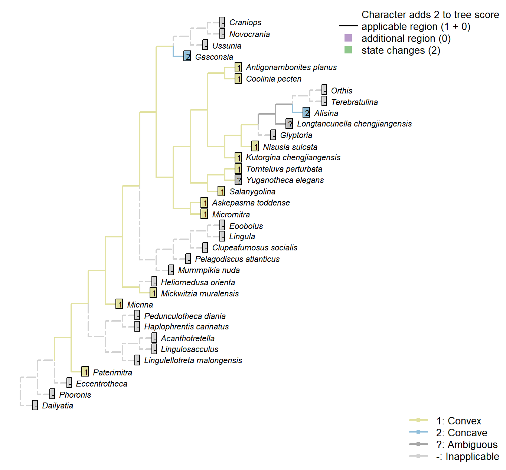
Character 40 : Sclerites: Ventral valve: Posterior surface: Delthyrium: Pseudodeltidium: Shape
1: Convex
2: Concave
Transformational character.
A ridge-like (i.e. convex) pseudodeltitium unites Salanygolina with Coolinia and other Chileata (Holmer et al., 2009, p. 6).
Salanygolina: “The presence of […] a narrow delthyrium covered by a convex pseudodeltidium, places Salanygolinidae outside the Class Paterinata and strongly suggests affinity to the Cambrian Chileida” – Holmer et al. 1009, p. 9.
Alisina: “concave pseudodeltidium with median plication” – Williams et al. (2000)
Coded as “Pseudodeltidium: Covered by concave plate” by Bassett et al. (2001).
Gasconsia: Gasconsia possesses narrow concave homeodeltidium, but absent pseudodeltidium.
Sclerites: Ventral valve: Posterior surface: Delthyrium: Pseudodeltidium: Hinge furrows

Character 41 : Sclerites: Ventral valve: Posterior surface: Delthyrium: Pseudodeltidium: Hinge furrows
0: Absent
1: Present
Neomorphic character.
After Bassett et al. (2001) character 18, “Hinge furrows on lateral sides of pseudodeltidium”.
Pedunculotheca diania: Absent due to inapplicability of neomorphic character.
Micrina: Absent due to inapplicability of neomorphic character.
Paterimitra: Absent due to inapplicability of neomorphic character.
Eccentrotheca: Absent due to inapplicability of neomorphic character.
Haplophrentis carinatus: Absent due to inapplicability of neomorphic character.
Lingulosacculus: Absent due to inapplicability of neomorphic character.
Phoronis: Absent due to inapplicability of neomorphic character.
Mummpikia nuda: Absent due to inapplicability of neomorphic character.
Salanygolina: The presence of this feature is impossible to determine based on the available material.
Dailyatia: Absent due to inapplicability of neomorphic character.
Lingula: Absent due to inapplicability of neomorphic character.
Acanthotretella: Absent due to inapplicability of neomorphic character.
Heliomedusa orienta: Absent due to inapplicability of neomorphic character.
Lingulellotreta malongensis: Absent due to inapplicability of neomorphic character.
Askepasma toddense: Absent due to inapplicability of neomorphic character.
Micromitra: Absent due to inapplicability of neomorphic character.
Pelagodiscus atlanticus: Absent due to inapplicability of neomorphic character.
Novocrania: Absent due to inapplicability of neomorphic character.
Terebratulina: Absent due to inapplicability of neomorphic character.
Orthis: Absent due to inapplicability of neomorphic character.
Glyptoria: Absent due to inapplicability of neomorphic character.
Clupeafumosus socialis: Absent due to inapplicability of neomorphic character.
Sclerites: Ventral valve: Umbonal perforation
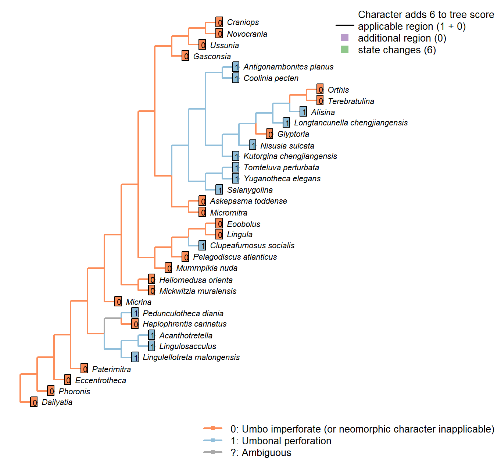
Character 42 : Sclerites: Ventral valve: Umbonal perforation
0: Umbo imperforate (or neomorphic character inapplicable)
1: Umbonal perforation
Neomorphic character.
Certain taxa, particularly those with a colleplax, exhibit a perforation at the umbo of the ventral valve. This opening is sometimes associated with a pedicle sheath.
Eccentrotheca: Inapplicable as scleritome is not bivalved.
The sclerites of Eccentrotheca form a ring that surrounds the inferred attachment structure; the attachment structure does not emerge from an aperture within an individual sclerite. Thus no feature in Eccentrotheca is judged to be potentially homologous with the apical perforation in bivalved brachiopods.
Lingulosacculus: The apical termination of the fossil is unknown.
Dailyatia: The B and C sclerites of Dailyatia bear small umbonal perforations (Skovsted, Betts, Topper, & Brock, 2015), but these are not considered to be homologous with the ventral valve, so this character is coded as inapplicable – though the possibility that the perforations are equivalent is intriguing.
A1 sclerites typically have a pair of perforations, which are conceivably equivalent to the setal tubes of Micrina (Holmer, Skovsted, Larsson, Brock, & Zhang, 2011). The A1 sclerite of D. bacata has a structure that is arguably similar to the ‘colleplax’ of Paterimitra. But the homology of any of these structures to the umbonal aperture of brachiopods is difficult to establish.
Heliomedusa orienta: “there is compelling evidence to demonstrate that the putative pedicle
illustrated by Chen et al. (2007: Figs. 4, 6, 7) in fact is the mold of a three-dimensionally preserved visceral cavity.” – Z.-F. Zhang et al. (2009).
Clupeafumosus socialis: An umbonal perforation is distinctive of Acrotretids, and is reported by Topper et al. (2013).
Mickwitzia muralensis: The umbo itself is imperforate, though note that an opening is incorporated at the base of the homeodeltidium when the organism switches from early to late maturity (fig. 10 in Balthasar (2004)).
Sclerites: Ventral valve: Umbonal perforation: Shape
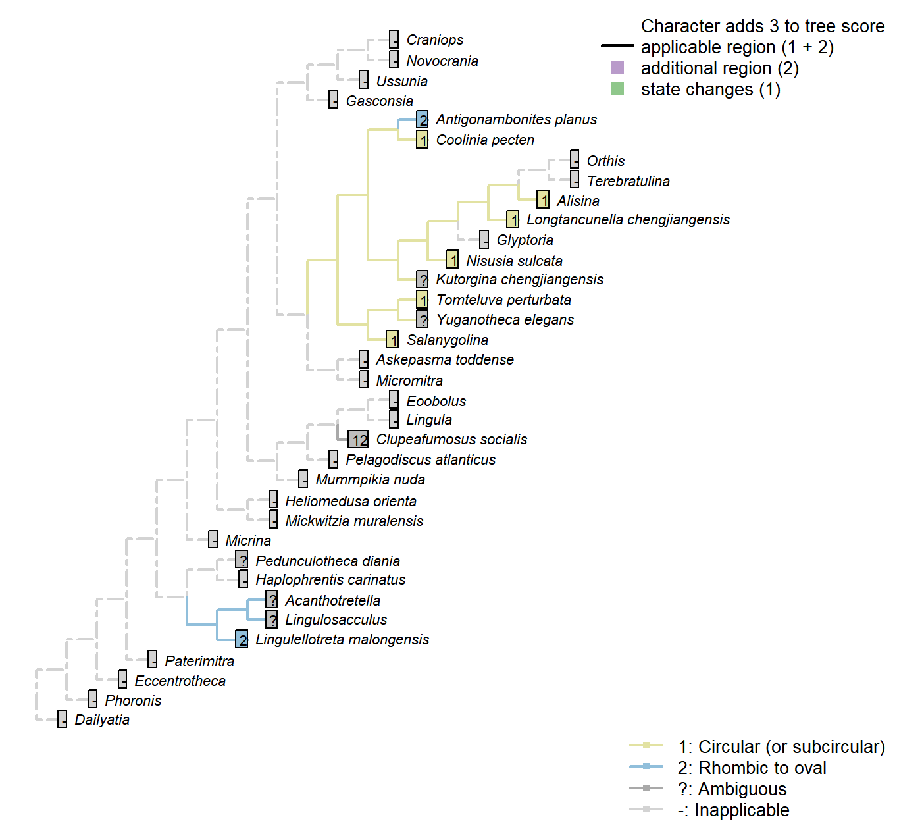
Character 43 : Sclerites: Ventral valve: Umbonal perforation: Shape
1: Circular (or subcircular)
2: Rhombic to oval
Transformational character.
Chen et al. (2007) propose that an oval to rhombic foramen characterises the discinids (and Heliomedusa, though the foramen in this taxon has since been reinterpreted by Zhang et al. (2009) as an impression of internal tissue).
Coolinia pecten: Bassett and Popov write “a dominant feature of the ventral umbo is a sub-oval perforation about 270 μm long and 250 μm wide”: the width and height of this structure are almost identical, and we score it as (sub) circular.
Kutorgina chengjiangensis: The exact size and shape of the apical perforation is obscured by the emerging pedicle.
Salanygolina: Essentially circular (Holmer et al., 2009, fig. 4).
Acanthotretella: Too small to observe given quality of preservation (Homer & Caron 2006).
Heliomedusa orienta: Rhombic to oval – seen as evidence for a discinid affinity (Chen et al., 2007).
Lingulellotreta malongensis: Oval (Williams et al., 2000).
Nisusia sulcata: " close to circular " (Holmer et al. 2018).
Antigonambonites planus: Based on p.92, fig.4B.
Alisina: Seemingly circular (Zhang et al. 2011).
Clupeafumosus socialis: Taller than wide in some cases, but very nearly circular in others; see Topper et al. (2013).
Sclerites: Ventral valve: Colleplax, cicatrix or pedicle sheath
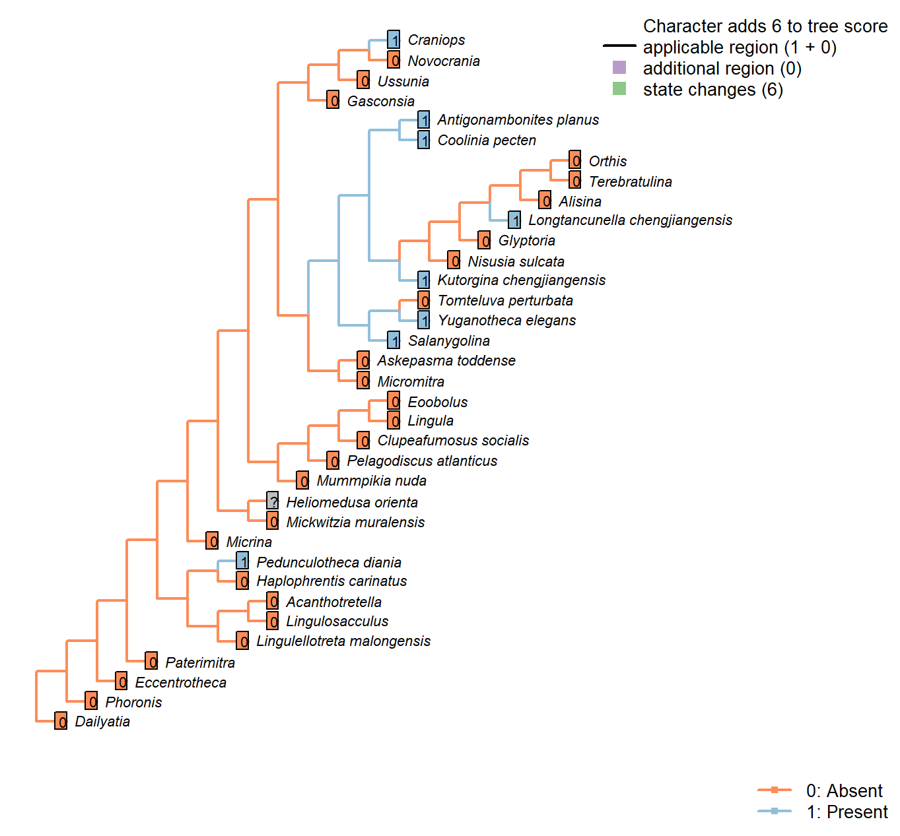
Character 44 : Sclerites: Ventral valve: Colleplax, cicatrix or pedicle sheath
0: Absent
1: Present
Neomorphic character.
In certain taxa, the umbo of the ventral valve bears a colleplax, cicatrix or pedicle sheath; Bassett et al. (2008) consider these structures as homologous.
Pedunculotheca diania: The flat apical termination of juvenile individuals possibly functioned as colleplax for attachment, we treated as potentially homologous.
Micrina: Absent in Micrina, though present in co-occurring Paterimitra.
Heliomedusa orienta: A cicatrix was reconstructed by Jin & Wang (1992) (figs 6b, 7), but has not been reported by later authors; possibly, as with the ‘pedicle foramen’ of Chen et al. (2007), this structure represents internal organs rather than a cicatrix proper (Z.-F. Zhang et al., 2009); as such it has been recorded as ambiguous.
Longtancunella chengjiangensis: A ring-like structure surrounding the pedicle sheath is interpreted as a colleplax (Zhang et al. 2011), though the authors make no comparison with the pedicle capsule exhibited by extant terebratulids (see Holmer et al. 2018).
Lingulellotreta malongensis: The pedicle is identified as such (rather than a pedicle sheath) by the internal pedicle tube.
Clupeafumosus socialis: Not reported by Topper et al. (2013).
Yuganotheca elegans: The median collar or conical tube is conceivably homologous with the pedicle sheath.
Craniops: Paracraniops is “externally similar to Craniops, but lacking cicatrix” – indicating that Craniops bears a cicatrix. (Williams et al., 2000) Aso coded present in their table 15.
Ussunia: Following table 15 in Williams et al. (2000).
Sclerites: Ventral valve: Median septum
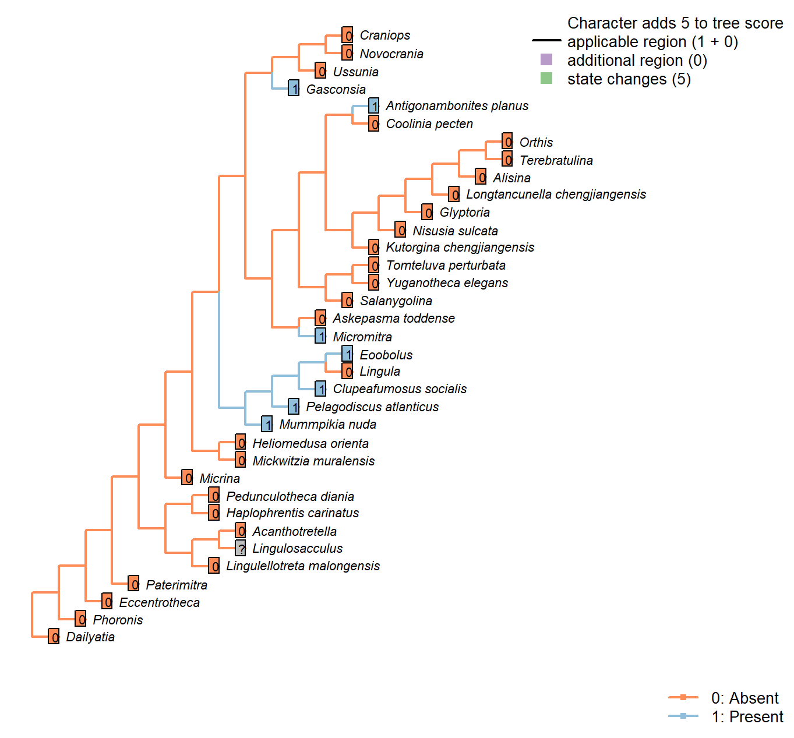
Character 45 : Sclerites: Ventral valve: Median septum
0: Absent
1: Present
Neomorphic character.
Chen et al. (2007) observe a median septum in what they interpret as the ventral valve of Heliomedusa, and the ventral valve of Discinisca, which they propose points to a close relationship.
Haplophrentis carinatus: The carina of H. carinatus is an angular elevation of the ventral valve surface, rather than a septum growing inward on the interior of shell.
Mummpikia nuda: “Some specimens also reveal that the vault had a slight median septum, which is now visible as a notch or a groove dividing the right from the left part” – Balthasar (2008).
Heliomedusa orienta: Reported on ‘ventral’ valve by Chen et al. (2007); we consider the ‘ventral’ valve to be the dorsal valve.
Micromitra: Ventral ridge characteristic of Micromitra (Skovsted & Peel, 2010).
Pelagodiscus atlanticus: Described as present in Discinisca by Chen et al. (2007); assumed present also in Pelagodiscus.
Novocrania: Valve thin and often unmineralized.
Gasconsia: Evident in moulds of ventral valve; see Watkins (2002).
Glyptoria: Neither evident nor reported in Williams et al. (2000).
Clupeafumosus socialis: A short medial ridge (septum) is present in the ventral valve (Topper et al. 2013).
Ussunia: Following char. 42 in table 15 in Williams et al. (2000).
Eoobolus: Prominent median septum (fig. 4d, e in Balthasar 2009).
Sclerites: Concentric ornament
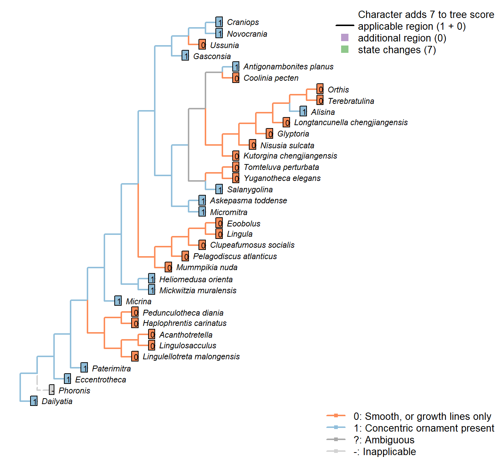
Character 46 : Sclerites: Concentric ornament
0: Smooth, or growth lines only
1: Concentric ornament present
Neomorphic character.
After character 11 in Williams et al. (1998).
Eccentrotheca: More or less concentric ridges occur on Eccentrotheca sclerites (Skovsted, Brock, Topper, Paterson, & Holmer, 2011).
Kutorgina chengjiangensis: Following Appendix 2 in Williams et al. (1998).
Salanygolina: Following Appendix 2 in Williams et al. (1998).
Heliomedusa orienta: The ornament on shell exterior is described as concentric fila (Chen et al., 2007, P.43), and also scored as it in Willaims et al. (2000, pp.160–163).
Askepasma toddense: Following Appendix 2 in Williams et al. (1998).
Micromitra: Following Appendix 2 in Williams et al. (1998).
Pelagodiscus atlanticus: Only growth lines evident (Williams et al., 2000).
Novocrania: Irregular ridges externally (Williams et al., 2000).
Terebratulina: Single ridge evident in Williams et al. (2006) fig. 1425.1a interpreted as interruption ot growth rather than inherent feature, so coded as absent (i.e. smooth).
Glyptoria: Following Appendix 2 in Williams et al. (1998).
Mickwitzia muralensis: Symmetric fila.
Sclerites: Concentric ornament: symmetry

Character 47 : Sclerites: Concentric ornament: symmetry
0: Symmetric fila
1: Asymmetric fila, with outer faces
Neomorphic character.
After character 11 in Williams et al. (1998).
Micrina: No obvious asymmetry, even if not obviously symmetric either (Holmer et al., 2008). Coded as ambiguous.
Eccentrotheca: Ornament, such as it is, is asymmetric, with prominent outer faces (Skovsted et al., 2011).
Kutorgina chengjiangensis: Following Appendix 2 in Williams et al. (1998).
Salanygolina: Following Appendix 2 in Williams et al. (1998).
Dailyatia: Clear asymmetry (Skovsted et al., 2015).
Heliomedusa orienta: See fig. 1715 in Williams et al. (2007).
Askepasma toddense: Following Appendix 2 in Williams et al. (1998).
Micromitra: Following Appendix 2 in Williams et al. (1998).
Novocrania: Clear outer faces (Williams et al., 2000, fig. 100.2b).
Alisina: Seemingly asymmetric [Williams et al. (2000), fig. 122.3c; Zhang et al. 2011, Fig. 1].
Glyptoria: Following Appendix 2 in Williams et al. (1998).
Mickwitzia muralensis: Symmetric fila (Balthasar, 2004).
Sclerites: Radial ornament

Character 48 : Sclerites: Radial ornament
0: Absent
1: Present
Neomorphic character.
Ridges radiating from umbo, i.e. ribs.
Heliomedusa orienta: See fig. 1715 in Williams et al. (2007).
Askepasma toddense: “Ornament of irregularly developed, concentric growth lamellae; microornament of irregularly arranged, polygonal pits” – Williams et al. (2000), p153; figs on p.155.
Gasconsia: “Ornament of indistinct low radial ribs” – Williams et al. (2000, p167).
Glyptoria: “Coarsely costate” – Williams et al. (2000, p710).
Ussunia: Unornamented.
Eoobolus: Very faint costellae in some specimens but coded absent.
Sclerites: Shell-penetrating spines

Character 49 : Sclerites: Shell-penetrating spines
0: Absent
1: Present
Neomorphic character.
Mineralized or partly mineralized spines are observed in Heliomedusa and Acanthotretella.
Heliomedusa orienta: The ‘spines’ reported by Chen et al. (2007) are pyritized spinelike
setae – see pp. 2580–2590 in Williams et al. (2007).
Nisusia sulcata: Bears numerous small, hollow spines (Williams et al., 2000).
Glyptoria: Neither evident nor reported in Williams et al. (2000).
Sclerites: Mineralogy
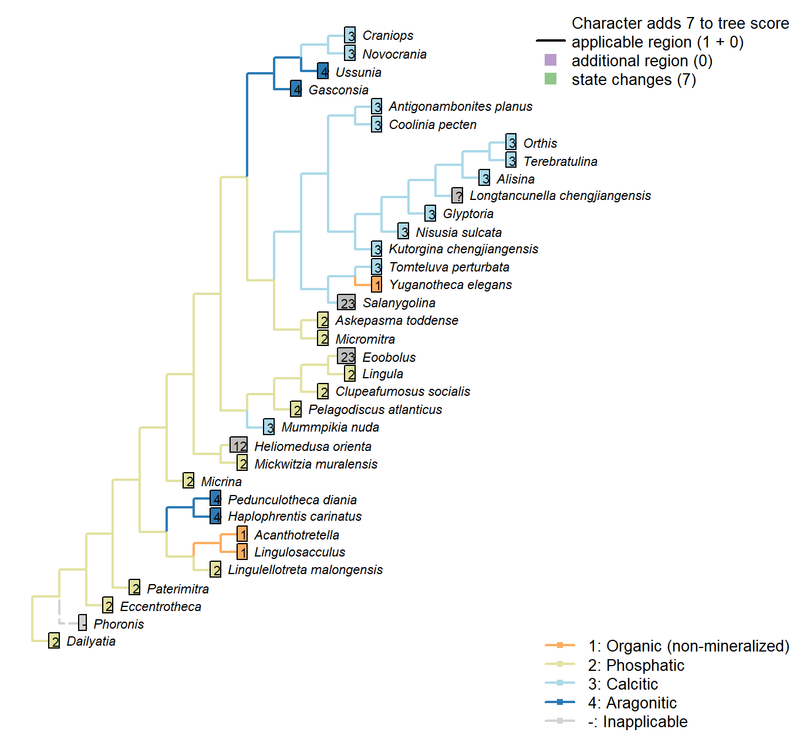
Character 50 : Sclerites: Mineralogy
1: Organic (non-mineralized)
2: Phosphatic
3: Calcitic
4: Aragonitic
Transformational character.
Mummpikia nuda: Identified as calcareous by preservational criteria, and description “primary
calcitic shells of M. nuda” (Balthasar, 2008).
Salanygolina: Original mineralogy unknown, but known to be mineralised and anticipated to be phosphatic (Holmer et al., 2009).
Acanthotretella: Holmer & Caron (2006) note the absence of brittle breakage, interpreted as indicating the absence of a material mineralized component to the shells.
Heliomedusa orienta: “Shell originally organophosphatic, but may generally have been poorly mineralized” – Williams et al. (2007) – cf. ibid, p. 2889, " These strong similarities to discinoids in soft-part anatomy imply that the Heliomedusa shell was chitinous or chitinophosphatic, not calcareous.“.
Longtancunella chengjiangensis: “The original composition of the shell cannot be determined with certainty”, though it was “most probably entirely soft and organic” – Zhang et al. 2011.
Novocrania: Ventral valve uncalcified in extant forms or sometimes thin (Williams et al., 2000), but coded as calcitic as calcite-mineralizing pathways are present.
Gasconsia: Confirmed in Trimerella by Balthasar et al. (2011).
Clupeafumosus socialis: Phosphatic – hence the conventional placement within Linguliformea.
Craniops: Shell calcitic.
Mickwitzia muralensis: Calcite and silica deemed diagenetic by Balthasar (2004).
Eoobolus: “the original shell of Eoobolus contained small calcareous grains that were incorporated into organic-rich layers alongside apatite” (Balthasar, 2007).
Sclerites: Composition of cuticle or organic matrix

Character 51 : Sclerites: Composition of cuticle or organic matrix
1: GAGs, chitin and collagen
2: Glycoprotein
Transformational character.
Williams et al. (1996) identify glycoprotein-based organic scaffolds as distinct from those comprising glycosaminoglycans (GAGs), chitin and collagen. This character can only be scored for extant taxa.
Phoronis: “The presence of sulphated glycosaminoglycans (GAGs) in the chitinous cuticle of Phoronis (Herrmann, 1997, p. 215) would suggest a link with linguliforms, as GAGs are unknown in rhynchonelliform shells (Fig. 1891, 1896)” – Williams et al. (2007), p. 2830.
Lingula: Coded as GAGs, chitin and collagen in lingulids by Williams et al. (1996).
Pelagodiscus atlanticus: Coded as GAGs, chitin and collagen in discinids by Williams et al. (1996).
Novocrania: Coded as glycoprotein for craniids by Williams et al. (1996).
Terebratulina: Coded as glycoprotein for terebratulids by Williams et al. (1996).
Sclerites: incorporation of sedimentary particles
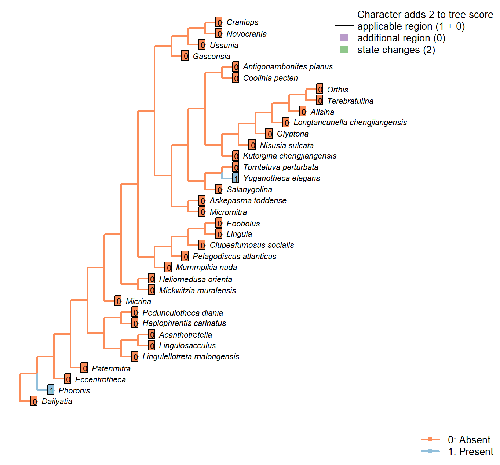
Character 52 : Sclerites: incorporation of sedimentary particles
0: Absent
1: Present
Neomorphic character.
Phoronids and Yuganotheca aggulutinate particles into their sclerites.
Sclerites: Periostracum: Flexibility

Character 53 : Sclerites: Periostracum: Flexibility
1: Flexible
2: Inflexible
Transformational character.
Following character 9 in Williams et al. (1998); see their p228–230 for a discussion of how this might be inferred from fossil material.
Kutorgina chengjiangensis: Following Appendix 2 in Williams et al. (1998).
Salanygolina: Following Appendix 2 in Williams et al. (1998).
Askepasma toddense: Following Appendix 2 in Williams et al. (1998).
Micromitra: Following Appendix 2 in Williams et al. (1998).
Pelagodiscus atlanticus: Flexible (Williams et al. 1998).
Glyptoria: Following Appendix 2 in Williams et al. (1998).
Sclerites: Microstructure: Layers

Character 54 : Sclerites: Microstructure: Layers
1: Single microstructural layer
2: Two microstructurally differentiated layers
3: Inner and outer laminae enclosing medial void
4: Three microstrurally differentiated layers
Transformational character.
Hyolith conchs comprise two mineralized layers of fibrous bundles. Bundles are measure 5–15 μm across; their constituent fibres are each 0.1–1.0 μm wide. In the inner layer, the fibres are transverse; in the outer layer, the bundles are inclined towards the umbo, becoming longitudinal on the outermost margin.
Obolellids comprise a single laminated mineralogical layer (Balthasar, 2008). Shell-penetrating canals are not considered as contributing to the mineralogical microstructure and are coded separately.
Namacalathus exhibits three layers, none of which have any obvious correspondence with those of brachiopods.
Coded as non-additive as there is no clear necessity to pass through the brachiopod-like construction: the three layers could arise by the addition of a void to a single pre-existing layer, for example.
Inapplicable in taxa with a non-mineralized shell.
Micrina: Identical to Mickwitzia and more derived linguliforms (Holmer et al., 2011).
Haplophrentis carinatus: Assumed to be equivalent to the hyoliths described by Kouchinsky (2000).
Clupeafumosus socialis: General acrotretid structure taken from Zhang et al. (2016).
Mickwitzia muralensis: “the shell structure of Mickwitzia […] is closely similar to the columnar shell of linguliform acrotretoid brachiopods as well as to the linguloid Lingulellotreta, in that it has slender columns in the laminar succession” – Williams et al. (2007).
Eoobolus: “Eoobolus shells exhibit the general characteristics of modern linguliform shells, i.e. they were composed of alternating sets of organic and apatite-rich layers that were separated by thin sheets of recalcitrant organic layers.” – Balthasar (2007).
Sclerites: Microstructure: Crystal format

Character 55 : Sclerites: Microstructure: Crystal format
1: Laminated
2: Fibrous bundles
3: Polygonal columns
Transformational character.
Hyolith conchs comprise two mineralized layers of fibrous bundles. Bundles measure 5–15 μm across; their constituent fibres are each 0.1–1.0 μm wide. In the inner layer, the fibres are transverse; in the outer layer, the bundles are inclined towards the umbo, becoming longitudinal on the outermost margin.
Obolellids comprise a single laminated mineralogical layer (Balthasar, 2008). Shell-penetrating canals are not considered as contributing to the mineralogical microstructure and are coded separately.
The pervasive (not just superficial) polygonal structures in Paterimitra are distinct, and characterize Askepasma, Sanalygolina, Eccentrotheca and Paterimitra (Larsson et al., 2014)
The treatise (Williams et al., 2000) identifies cross-bladed laminae as diagnostic of Strophomenata, with the exception of some older groups that contain fibres or laminar laths.
Namacalathus: The inner and outer layer are foliated. The columnar inflections lack canals, and as such we do not consider them to bear any obvious homology with the hollow pillars of tommotiids and certain brachiopods, their superficial similarity to strophomenid pseudopunctae notwithstanding.
Antigonambonites planus: Shell structure of this taxon is laminated, rather than fibrous as previously considered.
Craniops: “with calcitic or possibly aragonitic inarticulated shells with laminar (tabular) secondary layers” (Williams et al., 2000).
Sclerites: Microstructure: Punctae
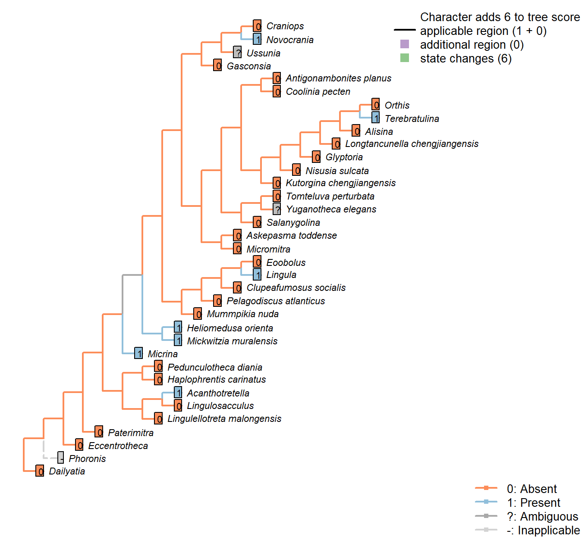
Character 56 : Sclerites: Microstructure: Punctae
0: Absent
1: Present
Neomorphic character.
Punctae are 10–20 μm wide canals created by multicellular extensions of the outer epithelium. They penetrate the full depth of the shell.
Balthasar (2008) writes:
“Vertical shell penetrating structures, such as punctae, pseudopunctae, extropunctae and canals, are common in many groups of brachiopods and are distinguished based on their geometry and size (Williams, 1997). Punctae are 10–20 μm wide and represent multicellular extensions of the outer epithelium (Owen and Williams 1969). Pseudopunctae and extropunctae are similar in diameter but, instead of canals, are vertical stacks of conical deflections of individual shell layers (Williams and Brunton 1993). None of these three types of vertical shell structure, all of which are confined to calcitic-shelled brachiopods, compares with the much smaller canals (< 1 μm in diameter) of M. nuda. The only type of vertical structure that fits the size and nature of the canals of the Mural obolellids are the canals of linguliform brachiopods, which range in width from 180 to 740 nm and are occupied by proteinaceous strands in
extant taxa (Williams et al. 1992, 1994; Williams (1997)). In contrast to obolellid canals, however, linguliform canals are not known to penetrate the entire shell but terminate in organic-rich layers (Williams, 1997). Based on
these considerations it would, therefore, be misleading to call obolellid shells punctate (they are as much”punctate" as acrotretids or other linguliforms); rather their shell structure should be called canaliculate (Williams, 1997).“.
Mummpikia nuda: “Vertical shell penetrating structures, such as punctae, pseudopunctae, extropunctae and canals, are common in many groups of brachiopods and are distinguished based on their geometry and size (Williams, 1997). Punctae are 10–20 μm wide and represent multicellular extensions of the outer epithelium (Owen and Williams 1969). […] None of these three types of vertical shell structure, all of which are confined to calcitic-shelled brachiopods, compares with the much smaller canals (.
Heliomedusa orienta: ‘Identical’ to those in Mickwitzia – see Williams et al. (2007).
Terebratulina: Endopunctae are relatively large canals, diameter vary greatly from 5–20µm.
Craniops: “impunctate”.
Mickwitzia muralensis: Coded as present to reflect that the chambers contained setae; following Carlson in Williams et al. (2007), the punctae may or may not be homologous as punctae, but are likely homologous as shell perforations; both these perforations and those of Micrina were associated with setae, even if their equivalence bay be with juvenile vs adult setal structures in modern brachiopods (Balthasar, 2004, p, 397).
Sclerites: Microstructure: Canals
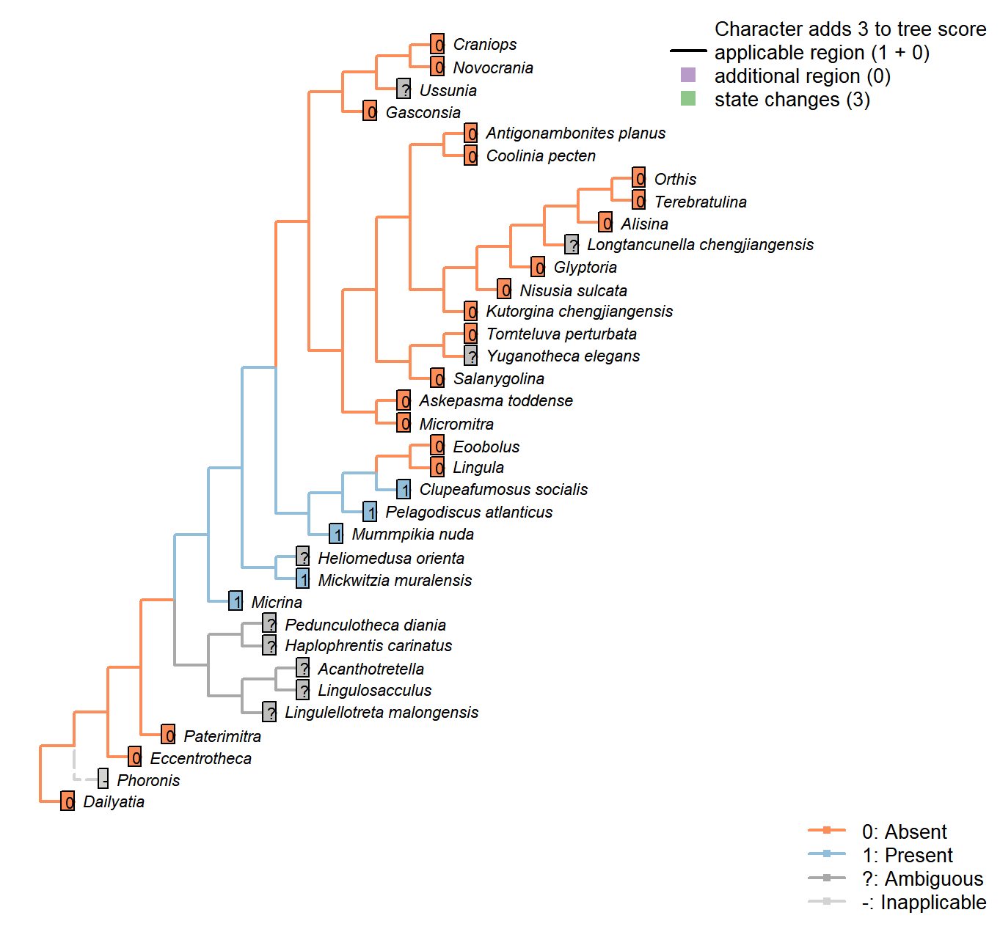
Character 57 : Sclerites: Microstructure: Canals
0: Absent
1: Present
Neomorphic character.
A caniculate microstructure occurs in lingulids; canals are narrower (< 1 μm) than punctae, may branch, and do not fully penetrate the shell, terminating just within the boundaries of a microstructural layer. See Williams (1997), p303ff, and Balthasar (2008), p273, for discussion.
Tubules described in hyoliths by Kouchinsky (2000) measure around 10 μm in diameter, making them an order of magnitude wider than lingulid canals.
This said, Balthasar (2008) considers the tubules within the columnar shell microstructure of Mickwitzia cf. occidens (1–3 μm wide, Skovsted & Holmer (2003)), acrotretides (1 μm wide, see Holmer (1989), Zhang et al. (2016)) and lingulellotretids (100 nm wide, Cusack, Williams, & Buckman (1999)) as equivalent to lingulid canals.
Micrina exhibits both punctae and canals (Harper, Popov, & Holmer, 2017), challenging Carlson’s contention (in Williams et al. (2007)) that the structures are potentially homologous as shell perforations.
Micrina: Acrotretid laminae bear characteristic columns (e.g. Zhang et al. (2016)); a similar fabric has been reported, and assumed homologous, in Micrina (Butler, Streng, Garwood, Lowe, & Holmer, 2012).
A similar columnar shell microstructure also occurs in the closely related Mickwitzia (Balthasar, 2008).
Namacalathus: Canal-like structures have been reported in Namacalathus (Zhuravlev, Wood, & Penny, 2015), and interpreted as evidence for a Lophophorate affinity. Though the structures are not necessarily directly equivalent, the hypothesis of homology is followed here.
Haplophrentis carinatus: The tubules within the centre of the bundles of hyolith shells (Kouchinsky, 2000) are c. 10 μm wide, making them an order of magnitude larger than the canals that characterize lingulid valves. It is not clear that they are necessarily homologous.
Longtancunella chengjiangensis: Preservational resolution not sufficient to evaluate.
Clupeafumosus socialis: Acrotretid laminae bear characteristic columns (e.g. Zhang et al. (2016)).
Balthasar (2008) considers these columns as homologous with tubules within the columnar shell microstructure Mummpikia, Mickwitzia and lingulellotretids.
Mickwitzia muralensis: Coded as present to reflect similarity of columnar microstructure remarked on by, among others, Balthasar (2008); Williams et al. (2007); Skovsted & Holmer (2003).
Sclerites: Microstructure: Pseudopunctae

Character 58 : Sclerites: Microstructure: Pseudopunctae
0: Absent
1: Present
Neomorphic character.
Pseudopunctae are not punctae, but deflections of shell laminae. They characterise Strophomenata in particular.
Nisusia sulcata: Scored absent in data matrix of Benedetto (2009).
Antigonambonites planus: Scored absent in data matrix of Benedetto (2009).
Orthis: Scored absent (in Eoorthis) in data matrix of Benedetto (2009).
Glyptoria: Scored absent in data matrix of Benedetto (2009).
Sclerites: Microstructure: External polygonal ornament

Character 59 : Sclerites: Microstructure: External polygonal ornament
0: Absent
1: Present
Neomorphic character.
Regular polygonal compartments, around 10 μm in diameter, characterise Paterimitra and some other brachiopod groups. Walls between compartments have the cross-section of an anvil. external polygonal structure (possible imprints of epithelial tissue)occurs in Dailyatia, but it is surface pattern, which is different from the polygonal prisms in the body wall of other paterinid like groups.
Clupeafumosus socialis: The polygonal ornament reported in acrotretids by Zhang et al. (2016) is on the internal surface of the shell.
Egg size
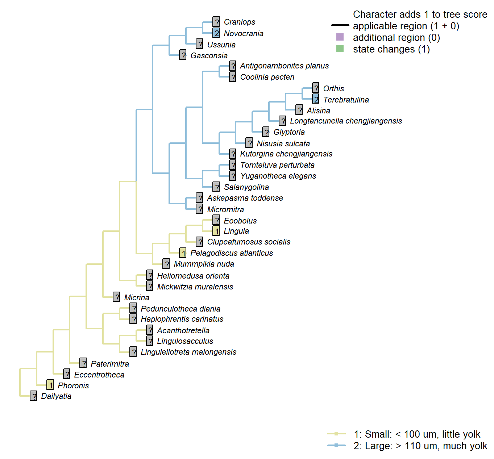
Character 60 : Egg size
1: Small: < 100 um, little yolk
2: Large: > 110 um, much yolk
Transformational character.
Following Carlson (1995), character 7. This character is only possible to code in extant taxa. It is not considered independent of Carlson’s character 11, number of gametes released per spawning, as it is possible to produce more small eggs than large eggs – thus this latter character is not reproduced in the present study. The same goes for Carlson’s character 12, gamete dispersal mode; brooders will tend to brood large eggs.
Phoronis: Phoronis has planktotrophic larvae indicating a small egg size – Ruppert, Fox, & Barnes (2004).
Carlson (1995) codes phoronids as polymorphic, as some members of the phylum have eggs of each size.
Lingula: Following coding for class in Carlson (1995) Appendix 1, character 7.
Pelagodiscus atlanticus: Following coding for class in Carlson (1995) Appendix 1, character 7.
Novocrania: Following coding for class in Carlson (1995) Appendix 1, character 7.
Terebratulina: Following coding for class in Carlson (1995) Appendix 1, character 7.
Site of gamete maturation
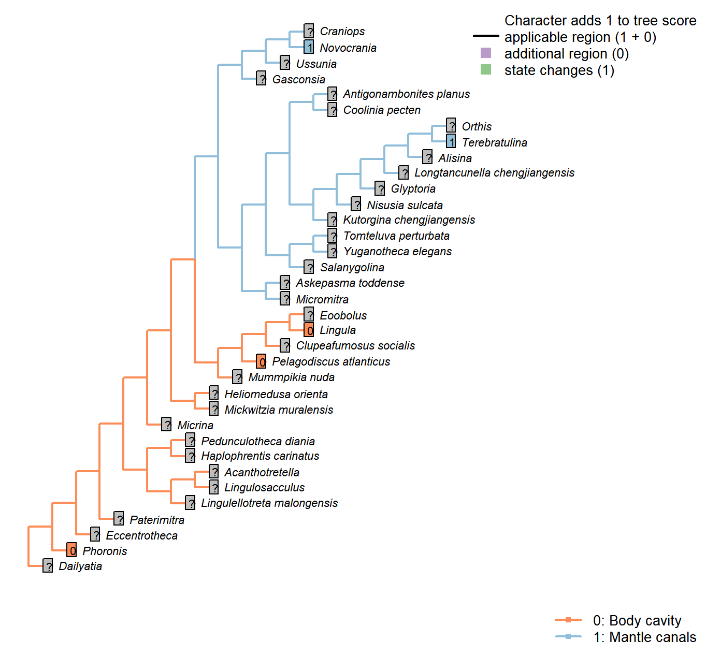
Character 61 : Site of gamete maturation
0: Body cavity
1: Mantle canals
Neomorphic character.
After Carlson (1995), character 9. Only possible to code in extant taxa. Mantle canals is considered the derived state, as it represents a migration from the body cavity, where gametes are produced.
Phoronis: Following coding for class in Carlson (1995) Appendix 1, character 9.
Lingula: Following coding for class in Carlson (1995) Appendix 1, character 9.
Pelagodiscus atlanticus: Following coding for class in Carlson (1995) Appendix 1, character 9.
Novocrania: Following coding for class in Carlson (1995) Appendix 1, character 9.
Terebratulina: Following coding for class in Carlson (1995) Appendix 1, character 9.
Embryonic shell

Character 62 : Embryonic shell
0: Absent
1: Present
Neomorphic character.
The embryonic shell or protegulum is secreted by the embryo immediately before hatching.
Namacalathus: Inapplicable insofar as reproduction occurs by budding; there is no evidence for a free-living larval stage. Nevertheless, the presence of a sexual reproductive phase in addition to asexual reproduction cannot be discounted.
Clupeafumosus socialis: Described by Topper et al. (2013).
Embryonic shell: Morphology

Character 63 : Embryonic shell: Morphology
1: Flat, disc-like (cf. Micrina)
2: Three prominent lobes forming a Y (cf. Paterimitra)
3: Spherical
Transformational character.
Micrina resembles linguliforms (Holmer et al., 2011): in both, the mitral protegulum has one pair of setal sacs enclosed by lateral lobes, whereas the ventral protegulum has two lateral setal tubes.
Paterimitra and Salanygolina have “identical” ventral larval shells (Holmer et al., 2011), resembling the shape of a ship’s propeller.
Hyoliths typically have a spherical larval shell; Pedunculotheca’s is seemingly cap-shaped.
Coolinia pecten: See fig. 3 in Bassett & Popov (2017).
Lingula: See fig. 159 in Williams (1997).
Askepasma toddense: Renoid – see fig. 4B3 in Topper et al. 2013.
Micromitra: Subtriangular – essentially round.
Pelagodiscus atlanticus: See e.g. fig 169 in Williams et al. (1997).
Clupeafumosus socialis: The flat larval shell of Clupeafumosus resembles that of Micrina in outline (Topper et al. 2013; cf. Holmer et al. (2011)).
Craniops: The embryonic shell is more or less circular in outline – see Freeman & Lundelius, 1999, fig. 6A.
Mickwitzia muralensis: Trifoliate appearance results from prominent attachment rudiment and bunching of setal sacs (Balthasar 2009).
Embryonic shell: Extended in larvae
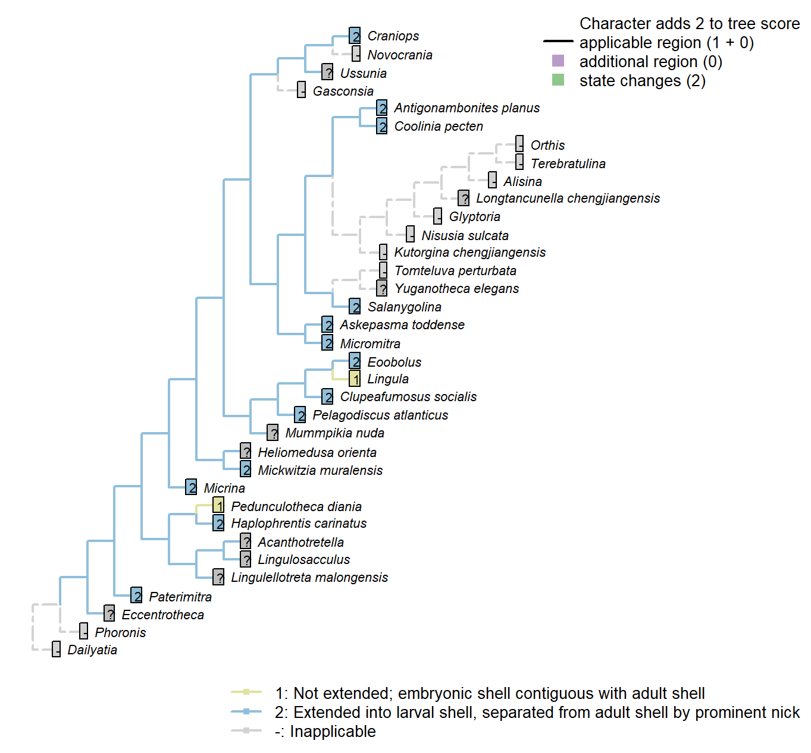
Character 64 : Embryonic shell: Extended in larvae
1: Not extended; embryonic shell contiguous with adult shell
2: Extended into larval shell, separated from adult shell by prominent nick
Transformational character.
Many taxa add to their embryonic shell during the larval phase of their life cycle. The shell that exists at metamorphosis, marked by a halo or nick point, is variously termed the “first formed shell”, “metamorphic shell” or “larval shell” (Bassett & Popov, 2017).
Clupeafumosus socialis: Described by Topper et al. (2013).
Craniops: Prominent nick; see Freeman & Lundelius (1999), fig. 6A.
Eoobolus: Nick point indicated by arrows in fig. 1 of Balthasar (2009).
Larval attachment structure

Character 65 : Larval attachment structure
0: Without evidence of pedicle
1: With evidence of pedicle
Neomorphic character.
Embryonic shells of Micrina and certain linguliforms exhibit a transversely folded posterior extension that speaks of the original presence of a pedicle in the embryo.
This is independent of the presence of an adult pedicle, which may arise after metamorphosis.
Clupeafumosus socialis: The larval shell embraces the pedicle foramen, suggesting a larval attachment. See fig. 4 of Topper et al. (2013).
Mickwitzia muralensis: Note the posterior lobe related to the attachment rudiment in fig. 2 of Balthasar 2009.
Eoobolus: Lobe related to the attachment rudiment (Balthasar 2009, fig. 2).
Setae in adults
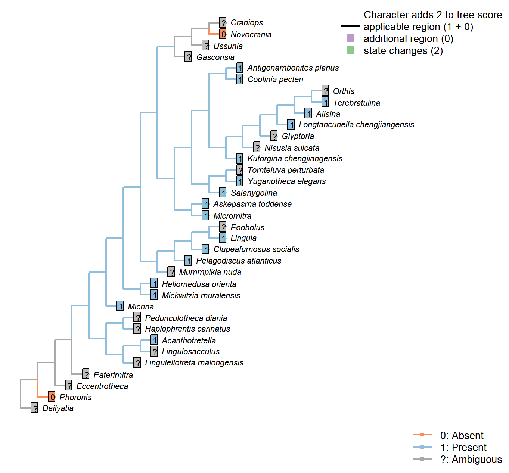
Character 66 : Setae in adults
0: Absent
1: Present
Neomorphic character.
Although preservation of setae (in adults) is exceptional, their presence can be inferred from shelly material (see Holmer & Caron (2006)).
Acanthotretella: Note that the setae do not obviously emerge from tubes, leading Holmer and Caron to question their homology with the setae of other taxa (Heliomedusa, Mickwitzia).
Both valves of Acanthotretella were coveredd by long spine-like and shell penetrating setae. The setae of A.decaius are usually preserved along anterior and anterolateral margins (Hu, Zhang, Holmer, & Skovsted, 2010).
Novocrania: “Adult craniids are without setae (a feature shared with the thecideides, the
shells of which are also cemented).” – Williams et al. (2007).
Clupeafumosus socialis: Setal bundles interpreted as present in acrotretids by Ushatinskaya (2016).
Setae: Distribution

Character 67 : Setae: Distribution
1: Uniform
2: Only present at margins of shell
Transformational character.
Setae penetrate the valves of many brachiopods. In certain taxa, they are apparent only at the margins of the valves, in association with the commissure, being reduced or lost over the surface of the shell.
Eccentrotheca: Skovsted et al. (2011) assumed the setae may have been present along the margin of the adapical opening, but there is no fossil evidence.
Heliomedusa orienta: Throughout the shell – see Williams et al. (2007) – causing the pustulose appearance remarked upon by Chen et al. (2007).
Setae: present in larva

Character 68 : Setae: present in larva
0: No evidence of setae in embryonic shell
1: Setae present
Neomorphic character.
The protegulum of Micrina is penetrated with canals that were originally associated with setae, a character that it has in common with linguliforms (Holmer et al., 2011).
Lingulellotreta malongensis: Familial character: larval shell smooth (williams et al.,2000, p.72).
Clupeafumosus socialis: Setal bundles interpreted as present in acrotretids by Ushatinskaya (2016).
Mickwitzia muralensis: Four setal sacs.
Setae: Embryonic: Setal sacs

Character 69 : Setae: Embryonic: Setal sacs
0: Absent
1: Present
Neomorphic character.
Setal sacs are recognizable as raised lumps on the juvenile shell (see Bassett and Popov 2017).
Micrina and linguliforms have setal sacs on their mitral/dorsal embryonic shell, whereas these are absent in Paterimitra (Holmer et al., 2011).
Lingula: Lingulids’ larval setae are not arranged in bundles (Carlson, 1995).
Lingulellotreta malongensis: Familial character: larval shell smooth (williams et al.,2000, p.72).
Pelagodiscus atlanticus: Three pairs (Carlson, 1995).
Novocrania: Three pairs (Carlson, 1995).
Clupeafumosus socialis: Setal bundles interpreted as present in acrotretids by Ushatinskaya (2016).
Setae: Embryonic: Setal sacs: Number

Character 70 : Setae: Embryonic: Setal sacs: Number
1: One pair
2: Two pairs
3: Three pairs
Transformational character.
Two pairs on e.g. Coolina; one on e.g. Micrina.
Pelagodiscus atlanticus: Three pairs (Carlson, 1995).
Novocrania: Three pairs (Carlson, 1995).
Clupeafumosus socialis: Two pairs identified in acrotretids by Ushatinskaya (2016).
Mickwitzia muralensis: See fig. 2 in Balthasar 2009.
Pedicle

Character 71 : Pedicle
0: Absent
1: Present
Neomorphic character.
The brachiopod pedicle is a fleshy protuberance that emerges from the posterior part of the body wall – as denoted in fossil taxa by its occurrence between the dorsal and ventral valves.
It is important to distinguish the pedicle from the “pedicle sheath”, a tubular extension of the umbo that grows by accretion from an isolated portion of the ventral mantle. For discussion see Holmer et al. 2017 and Bassett and Popov 2017.
Namacalathus: There is no obvious way to homologise the attachment structure with the ventral pedicle of brachiopods.
Lingulosacculus: The absence of a pedicle is inferred from the absence of an internal pedicle tube, and the absence of a pedicle at the hinge.
Acanthotretella: The attachment structure of Acanthotretella originates at the margin of the dorsal and ventral valves; although it emerges from the umbo of the ventral valve, the presence of an internal pedicle tube betrays its identity as a pedicle, rather than a pedicle sheath.
The pedicle of Acanthotretella emerges from a short extension of the umbo of the ventral valve. This extension is contiguous with the valve and presumably grew by accretion; its position and continuity with the valve suggest its interpretation as a pedicle sheath that is superseded as an attachment structure. On the other hand, its continuity with the internal pedicle tube suggests that is may represent an independent organ.
Heliomedusa orienta: “It seems unlikely that H. orienta possessed a pedicle that attached it to
the soft seafloor, like most other Chengjiang brachiopods.” …
“The putative pedicle illustrated by Chen et al. (2007: Figs. 4, 6, 7) in fact is the mold of a three-dimensionally preserved visceral cavity” – Z.-F. Zhang et al. (2009).
Nisusia sulcata: Has a pedicle, rather than a pedicle sheath as in Kutorgina – see Holmer et al. 2017, 2018.
Clupeafumosus socialis: A pedicle was presumably present, but only the foramen is preserved.
Craniops: Attached apically by cementation.
Mickwitzia muralensis: An attachment structure is inferred based on the presence of an opening (Balthasar, 2004); this is assumed to have been homologous with the brachiopod pedicle.
Pedicle: Constitution

Character 72 : Pedicle: Constitution
1: Massive or uniform
2: Densely stacked tabular discs
Transformational character.
The pedicle of certain chengjiang rhynchonelliforms comprises “densely stacked, three dimensionally preserved, tabular discs” (Holmer et al. 2018).
This contrasts with the uniform (‘massive’) pedicles of living taxa.
Terebratulina: Extant rhynconellid pedicles are massive, consisting of a thick outer chitinous cuticle, a pedicle epithelium, and a core composed of collagen fibres and cartilage-like connective tissue (Holmer et al. 2018).
Pedicle: Biomineralization
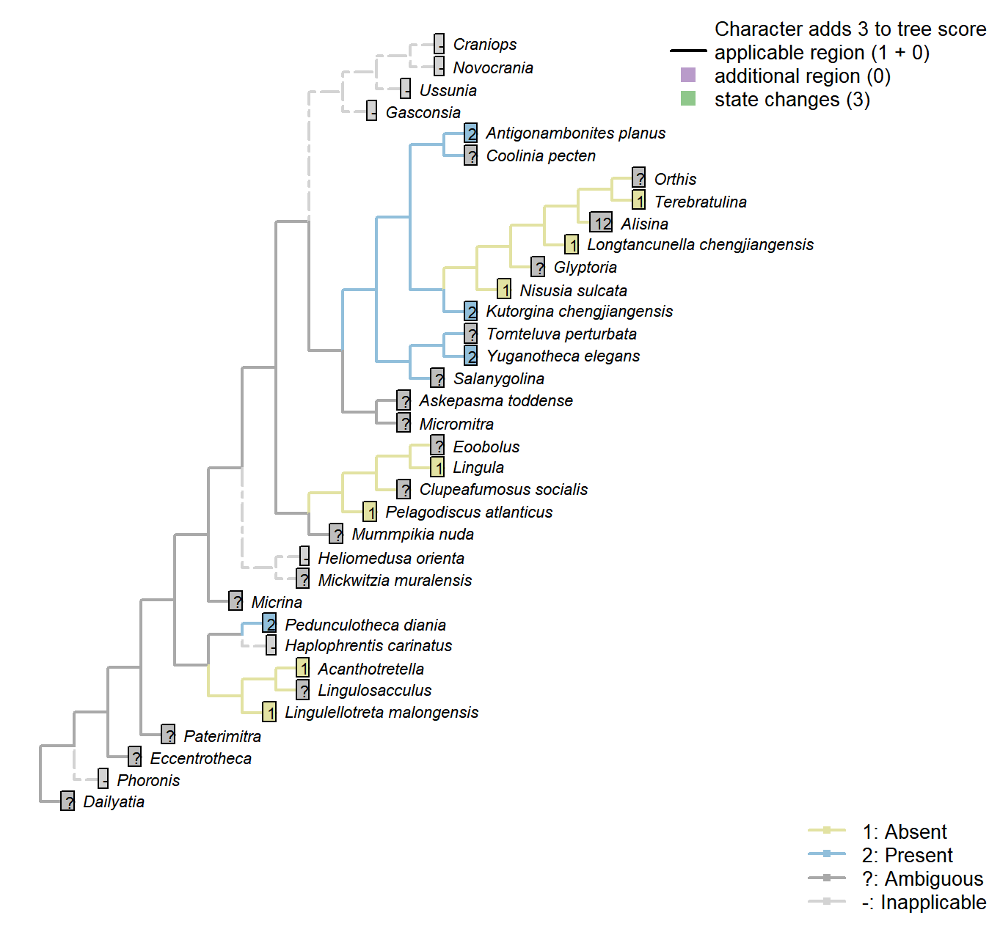
Character 73 : Pedicle: Biomineralization
1: Absent
2: Present
Transformational character.
The pedicle of strophomenates such as Antigonambonites is biomineralized (Holmer et al. 2018).
Pedicle: Bulb

Character 74 : Pedicle: Bulb
0: Absent
1: Present
Neomorphic character.
A bulb is an expanded region of the distal pedicle, often embedded into the sediment to improve anchorage.
Acanthotretella: Holmer and Caron interpret the presence of a bulb as tentative; we score it as ambiguous.
Pedicle: Distal rootlets

Character 75 : Pedicle: Distal rootlets
0: Absent
1: Present
Neomorphic character.
Neomorphic.
Observed in Pedunculotheca and Bethia (Sutton et al. 2005).
Pedicle: Tapering
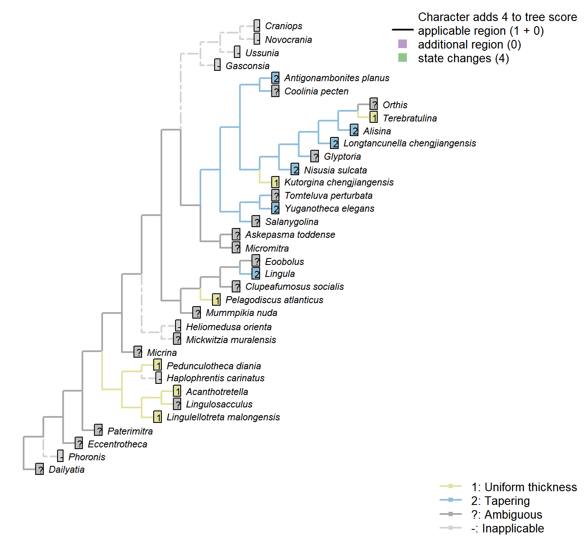
Character 76 : Pedicle: Tapering
1: Uniform thickness
2: Tapering
Transformational character.
Holmer et al. (2018) remark that the tapering aspect of the Nisusia pedicle recalls that of certain Chengjiang taxa (Alisina, Longtancunella) whilst distinguishing it from many other taxa (Eichwaldia, Bethia) in which the pedicle is a constant thickness.
Pedunculotheca diania: The pedicle thickness does not obviously change between the apex of the shell and the holdfast.
Antigonambonites planus: Tapered pedicle sheath with holdfast.
Pedicle: Coelomic region

Character 77 : Pedicle: Coelomic region
1: Absent
2: Present
Transformational character.
Certain brachiopods, such as Acanthotretella, exhibit a coelomic cavity within the pedicle or pedicle sheath.
Treated as transformational as it is not clear that either state is necessarily ancestral.
Nisusia sulcata: A coleomic canal is inferred based on the ease with which the pedicle is deformed (Holmer et al. 2018), but its presence is not known for certain so is coded ambiguous.
Pedicle: Surface ornament

Character 78 : Pedicle: Surface ornament
1: Smooth
2: Irregular wrinkles
3: Regular annulations
Transformational character.
Annulations are regular rings that surround the pedicle, and are distinguished from wrinkles, which are irregular in magnitude and spacing, and may branch or fail to entirely encircle the pedicle.
Kutorgina chengjiangensis: “Pronounced concentric annular discs disposed at intervals of 0.6–1.0 mm”.
Acanthotretella: “The pedicle surface is ornamented with pronounced annulated rings, disposed at intervals of about 0.2 mm”.
Longtancunella chengjiangensis: “The preserved pedicle has condensed annulations” – Zhang et al. 2011.
Lingulellotreta malongensis: Regularly annotated (see fig. 14.9 in Hou et al. (2017)).
Nisusia sulcata: The “strong annulations” vary significantly in transverse thickness (Holmer et al. 2018), so it is not clear whether these represent true annulations or wrinkles.
Antigonambonites planus: “The emerging pedicle has a consistent shape in all the available specimens and is strongly annulated and distally tapering” – Holmer et al. 2018.
Alisina: “It appears that the pedicle lacks a coelomic space and is distinctly annulated, with densely stacked tabular bodies” – Zhang et al. 2011.
Yuganotheca elegans: Annulations present in median collar.
Pedicle: position
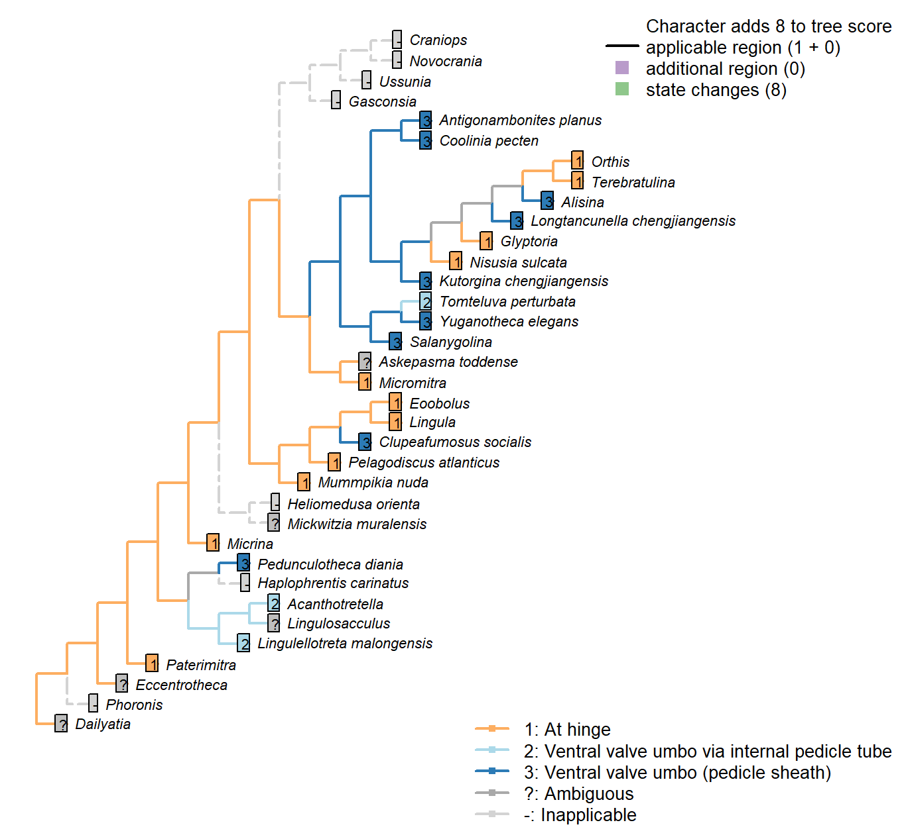
Character 79 : Pedicle: position
1: At hinge
2: Ventral valve umbo via internal pedicle tube
3: Ventral valve umbo (pedicle sheath)
Transformational character.
The pedicle of certain brachiopods (e.g. Ancanthotretella, siphonotretides, acrotretides) travels from the hinge line to the umbo (or in the case of Limgulellotreta manongensis, a foramen on the pseudointerarea) within an internal pedicle tube. See Holmer & Caron (2006) for discussion.
The pedicle sheath, in contrast, emerges from the umbo of the ventral valve without any indication of a relationship with the hinge.
Clupeafumosus socialis: The presumed pedicle foramen is at the ventral valve umbo, though no evidence of a pedicle sheath is present.
Mantle canals: Morphology

Character 80 : Mantle canals: Morphology
0: Pinnate (=lemniscate)
1: Bifurcate
2: Baculate
3: Saccate
Neomorphic character.
The morphology of dorsal and ventral canals is identical in all included taxa, so is assumed not to be independent – hence the use of a single character (contra Williams et al. (2000)).
For a description of terms see Williams et al. (1997, p. 2000).
Pinnate = “rapidly branch into a number of subequal, radially disposed canals”
Bifurcate = “vascula lateralia in both valves divide immediately after leaving the body cavity”
Baculate = “extend forward without any major dichotomy or bifurcation” (Williams, 1997, p. 418)
Saccate = “pouchlike sinuses lying wholly posterior to the arcuate vascula media” (ibid., p412).
Lingulosacculus: Baculate vascula media – Balthasar & Butterfield (2009).
Tomteluva perturbata: Preservation not adequate to evaluate (Streng et al., 2016).
Mummpikia nuda: “Poorly resolved” – Balthasar (2008).
Coolinia pecten: Not reported in Treatise (Williams et al., 2000).
Kutorgina chengjiangensis: Following Table 15 in Williams et al. (2000) (for Neocrania).
Salanygolina: Coded uncertain in Appendix 2 in Williams et al. (1998).
Lingula: Following Table 6 in Williams et al. (2000).
Acanthotretella: Following Table 6, for Siphonotretidae, in Williams et al. (2000).
Heliomedusa orienta: Described as pinnate by Jin & Wang (1992).
Longtancunella chengjiangensis: Reported by Zhang et al. (2007, 2011) though the interpretation is tentative.
Lingulellotreta malongensis: Following Table 6 in Williams et al. (2000).
Askepasma toddense: Described as pinnate (at least in ventral valve) by Williams et al. (1998, p. 250).
Micromitra: Described as saccate by Williams et al. (1998).
Nisusia sulcata: Following Table 15 in Williams et al. (2000).
Pelagodiscus atlanticus: Following Table 6, for Discinidae, in Williams et al. (2000).
Novocrania: Following Table 15 in Williams et al. (2000) (for Neocrania).
Terebratulina: “In modern terebratulides, the vascula media are subordinate to the lemniscate or pinnate vascula genitalia” – Williams (1997).
Antigonambonites planus: Not reported in Treatise (Williams et al., 2000).
Alisina: Following Table 15 in Williams et al. (2000).
Orthis: Sacculate (sometimes digitate in dorsal valve) (Williams et al., 2000, p716).
Gasconsia: Following Table 15 in Williams et al. (2000).
Glyptoria: Following Appendix 2 (char. 21) in Williams et al. (1998).
Clupeafumosus socialis: Following Table 8 (for Acrotreta) in Williams et al. (2000).
Craniops: Not reported from fossil material.
Mantle canals: vascula lateralia

Character 81 : Mantle canals: vascula lateralia
0: Absent
1: Present
Neomorphic character.
We treat the vascula lateralia as equivalent to the vascula genitalia of articulated brachiopods, allowing phylogenetic analysis to test their proposed homology.
Williams et al. (1997) write:
“The mantle canal system of most of the organophosphate-shelled species consists of a single pair of main trunks in the ventral mantle (vascula lateralia) and two pairs in the dorsal mantle, one pair (vascula lateralia) occupying a similar position to the single pair in the ventral mantle and a second pair projecting from the body cavity near the midline of the valve. This latter pair may be termed the vascula media, but whether they are strictly homologous with the vascula media of articulated brachiopods is a matter of
opinion. It is also impossible to assert that the vascula lateralia are the homologues of the vascula myaria or genitalia of articulated species, although they are likely to be so as they arise in a comparable position.”
“In inarticulated brachiopods, two main mantle canals (vascula lateralia) emerge from the main body cavity through muscular valves and bifurcate distally to produce an increasingly dense array of blindly ending branches near the periphery of the mantle (Fig. 71.1–71.2).”.
Tomteluva perturbata: Preservation not adequate to evaluate (Streng et al., 2016).
Kutorgina chengjiangensis: Following Table 15 in Williams et al. (2000).
Acanthotretella: Following Table 8 (which records presence in Siphonotreta) in Williams et al. (2000).
Heliomedusa orienta: Present: Williams et al. (2000); Jin & Wang (1992).
Longtancunella chengjiangensis: Presence is possible but requires interpretation that is not unambiguous:
“In the dorsal valve, there can be seen two baculate grooves that arise from the
anterior body wall at an antero-lateral position. These two grooves (Figs 4H, 5D) could be taken to represent the vascula lateralia” – Zhang et al. 2007.
Lingulellotreta malongensis: Present (Williams et al., 2000).
Askepasma toddense: “Laurie (1987) has shown that arcuate vascula media were present in the mantles of both valves as were pouchlike vascula genitalia, especially in the ventral valve” – Williams (1997).
Micromitra: “Laurie (1987) has shown that arcuate vascula media were present in the mantles of both valves as were pouchlike vascula genitalia, especially in the ventral valve” – Williams (1997).
Nisusia sulcata: Following Table 15 in Williams et al. (2000).
Pelagodiscus atlanticus: Wollowing Lochothele (Discinidae), Fig. 43.4a in Williams et al. (2000).
Novocrania: Following Table 15 in Williams et al. (2000) (for Neocrania).
Williams et al. (2000) write “Holocene craniides have only a single pair of main trunks in both valves, corresponding to the vascula lateralia”
Williams et al. (2007) reiterate this position (p. 2875), at least for the ventral valve.
Terebratulina: = vascula genitalia.
Alisina: Following Table 15 in Williams et al. (2000).
Orthis: = vascula genetalia.
Gasconsia: Following Table 15 in Williams et al. (2000).
Clupeafumosus socialis: Presence indicated in Table 8 (for Acrotreta) in Williams et al. (2000).
Yuganotheca elegans: Based on the figures and sketches in Z.-F. Zhang et al. (2014) (and supplementary material), the mantle canals are interpreted as lateral, with no clear vascula media present.
Mantle canals: vascula media

Character 82 : Mantle canals: vascula media
0: Absent
1: Present (in dorsal valve)
Neomorphic character.
Williams et al. (1997) note that in addition to the vascula lateralia, “Discinisca has two additional mantle canals emanating from the body cavity into the dorsal mantle (vascula media).”
These structures are only evident in the dorsal valve for the included taxa, so only a single character is necessary.
Tomteluva perturbata: Preservation not adequate to evaluate (Streng et al., 2016).
Kutorgina chengjiangensis: Following Table 15 in Williams et al. (2000).
Lingula: Following Table 6 in Williams et al. (2000).
Acanthotretella: Following Table 6 (for Siphonotretidae) in Williams et al. (2000).
Heliomedusa orienta: Present: Williams et al. (2000) p162, Jin & Wang (1992).
Longtancunella chengjiangensis: Reported by Zhang et al. (2007) though the interpretation is tentative.
Lingulellotreta malongensis: Following Table 6 in Williams et al. (2000).
Askepasma toddense: Following Table 6 (for Paterinidae) in Williams et al. (2000).
Micromitra: Reported by Williams et al. (1998).
Nisusia sulcata: Following Table 15 in Williams et al. (2000).
Pelagodiscus atlanticus: Following Table 6 (for Discinidae) in Williams et al. (2000).
Novocrania: Williams et al. (2000) write “Holocene craniides have only a single pair of main trunks in both valves, corresponding to the vascula lateralia” – an observation reflected in their table 15 (for Neocrania).
But in contrast, Williams et al. (2007), p. 2875, identify the dorsal valve’s canals as a vascula media in living cranidds (though both are lateralia in Ordoviian craniides). This character is therefore coded as ambiguous.
Terebratulina: “In modern terebratulides, the vascula media are subordinate to the lemniscate or pinnate vascula genitalia” – Williams (1997) p417.
Alisina: Following Table 15 in Williams et al. (2000).
Orthis: From idealised morphology in Williams et al. (2000).
Gasconsia: Following Table 15 in Williams et al. (2000).
Glyptoria: Present and divergent (Williams et al., 2000).
Clupeafumosus socialis: Following Hadrotreta schematic in Williams et al. (2000).
Yuganotheca elegans: Based on the figures and sketches in Z.-F. Zhang et al. (2014) (and supplementary material), the mantle canals are interpreted as lateral, with no clear vascula media present.
Eoobolus: Fig. 5 in Balthasar 2009.
Mantle canals: vascula terminalia

Character 83 : Mantle canals: vascula terminalia
0: Exclusively marginal (peripheral)
1: Directed peripherally and (intero)medially
Neomorphic character.
Presumed to be connected with setal follicles in life (Williams et al. 1998). See Williams et al. (2000) for discussion.
Kutorgina chengjiangensis: Coded uncertain in Appendix 2 in Williams et al. (1998).
Salanygolina: Coded uncertain in Appendix 2 in Williams et al. (1998).
Lingula: Peripheral and medial for all Lingulata (Williams et al., 2000).
Acanthotretella: Preservation not clear enough to score with certainty (Holmer & Caron, 2006).
Heliomedusa orienta: Inferred from Jin & Wang (1992).
Askepasma toddense: Peripheral only (Williams et al. 1998, 2000).
Micromitra: Peripheral only (Williams et al. 1998, 2000).
Pelagodiscus atlanticus: Wollowing Lochothele (Discinidae), Fig. 43.4a in Williams et al. (2000).
Novocrania: Peripheral only (Williams et al., 2000, p. 158).
Terebratulina: Following idealised plectolophous terebratulid of Emig (1992).
Alisina: Interomedial vascula terminalia not reported by Williams et al. (2000).
Orthis: See schematics in Williams et al. (2000).
Glyptoria: Following Appendix 2 in Williams et al. (1998).
Lophophore: tentacle disposition

Character 84 : Lophophore: tentacle disposition
1: Single side
2: Both sides
Transformational character.
Tentacles may occur along one or both sides of the axis of the lophophore arm (Carlson, 1995).
Lingulosacculus: Preservation insufficient to evaluate.
Phoronis: Following coding for higher group in Carlson (1995), Appendix 1, character 36.
Kutorgina chengjiangensis: Tentacles “cannot be confidently demonstrated in the available specimens.” – Zhang et al. 2007.
Lingula: Following coding for higher group in Carlson (1995), Appendix 1, character 36.
Acanthotretella: Preservation insufficient to evaluate (Caron & Holmer 2006).
Heliomedusa orienta: “Each lophophoral arm bears a row of long, slender flexible tentacles” – Z.-F. Zhang et al. (2009).
Longtancunella chengjiangensis: Inadequately preserved to evaluate.
Lingulellotreta malongensis: “The tentacles are clearly visible, and closely arranged in a single palisade” – Zhang et al. 2004.
Pelagodiscus atlanticus: Following coding for higher group in Carlson (1995), Appendix 1, character 36.
Novocrania: Following coding for higher group in Carlson (1995), Appendix 1, character 36.
Terebratulina: Following coding for higher group in Carlson (1995), Appendix 1, character 36.
Alisina: Preservation inadequate.
Lophophore: tentacle rows per side: trocholophe stage

Character 85 : Lophophore: tentacle rows per side: trocholophe stage
0: Single row
1: Ablabial and adlabial row
Neomorphic character.
After Carlson (1995), character 37. Lophophore tentacles are commonly arranged into an ablabial and adlablial row, with ablabial tentacles sometimes added later in development.
Phoronis: Following coding for higher taxon in Carlson (1995), appendix 1, character 37.
Lingula: Following coding for higher taxon in Carlson (1995), appendix 1, character 37.
Pelagodiscus atlanticus: Following coding for higher taxon in Carlson (1995), appendix 1, character 37.
Novocrania: Following coding for higher taxon in Carlson (1995), appendix 1, character 37. Also states in Williams et al. (2000), p. 158.
Terebratulina: Following coding for higher taxon in Carlson (1995), appendix 1, character 37.
Lophophore: tentacle rows per side: post-trocholophe stage

Character 86 : Lophophore: tentacle rows per side: post-trocholophe stage
0: Single row
1: Adbalial and ablabial row
Neomorphic character.
After Carlson (1995), character 37. Lophophore tentacles are commonly arranged into an ablabial and adlablial row, with ablabial tentacles sometimes added later in development.
Lingulosacculus: Preservation insufficient to evaluate.
Phoronis: Following coding for higher taxon in Carlson (1995), appendix 1, character 37.
Kutorgina chengjiangensis: Tentacles “cannot be confidently demonstrated in the available specimens.” – Zhang et al. 2007.
Lingula: Following coding for higher taxon in Carlson (1995), appendix 1, character 37.
Acanthotretella: Preservation insufficient to evaluate (Caron & Holmer 2006).
Heliomedusa orienta: “The lophophoral arms bear laterofrontal tentacles with a double row of cilia along their lateral edge, as in extant lingulid brachiopods” – Z.-F. Zhang et al. (2009).
Lingulellotreta malongensis: Single palisade – Zhang et al. 2004.
Pelagodiscus atlanticus: Following coding for higher taxon in Carlson (1995), appendix 1, character 37.
Novocrania: Following coding for higher taxon in Carlson (1995), appendix 1, character 37.
Terebratulina: Following coding for higher taxon in Carlson (1995), appendix 1, character 37.
Yuganotheca elegans: “helical lophophore fringed with a single row of thick, widely spaced, parallel-sided and hollow tentacles” – Z.-F. Zhang et al. (2014).
Lophophore: Median tentacle in early development

Character 87 : Lophophore: Median tentacle in early development
0: Absent
1: Present
Neomorphic character.
Following character 28 in Carlson (1995). Certain taxa exhibit a median tentacle early in development that is lost at some point in ontogeny.
Pedunculotheca diania: Lophophore ontogeny presently unknown.
Micrina: Lophophore ontogeny presently unknown.
Paterimitra: Lophophore ontogeny presently unknown.
Namacalathus: Lophophore ontogeny presently unknown.
Eccentrotheca: Lophophore ontogeny presently unknown.
Haplophrentis carinatus: Lophophore ontogeny presently unknown.
Lingulosacculus: Lophophore ontogeny presently unknown.
Tomteluva perturbata: Lophophore ontogeny presently unknown.
Mummpikia nuda: Lophophore ontogeny presently unknown.
Coolinia pecten: Lophophore ontogeny presently unknown.
Kutorgina chengjiangensis: Lophophore ontogeny presently unknown.
Salanygolina: Lophophore ontogeny presently unknown.
Dailyatia: Lophophore ontogeny presently unknown.
Acanthotretella: Lophophore ontogeny presently unknown.
Heliomedusa orienta: Lophophore ontogeny presently unknown.
Longtancunella chengjiangensis: Lophophore ontogeny presently unknown.
Lingulellotreta malongensis: Lophophore ontogeny presently unknown.
Askepasma toddense: Lophophore ontogeny presently unknown.
Micromitra: Lophophore ontogeny presently unknown.
Nisusia sulcata: Lophophore ontogeny presently unknown.
Antigonambonites planus: Lophophore ontogeny presently unknown.
Alisina: Lophophore ontogeny presently unknown.
Orthis: Lophophore ontogeny presently unknown.
Gasconsia: Lophophore ontogeny presently unknown.
Glyptoria: Lophophore ontogeny presently unknown.
Clupeafumosus socialis: Lophophore ontogeny presently unknown.
Yuganotheca elegans: Lophophore ontogeny presently unknown.
Lophophore: forms closed loop
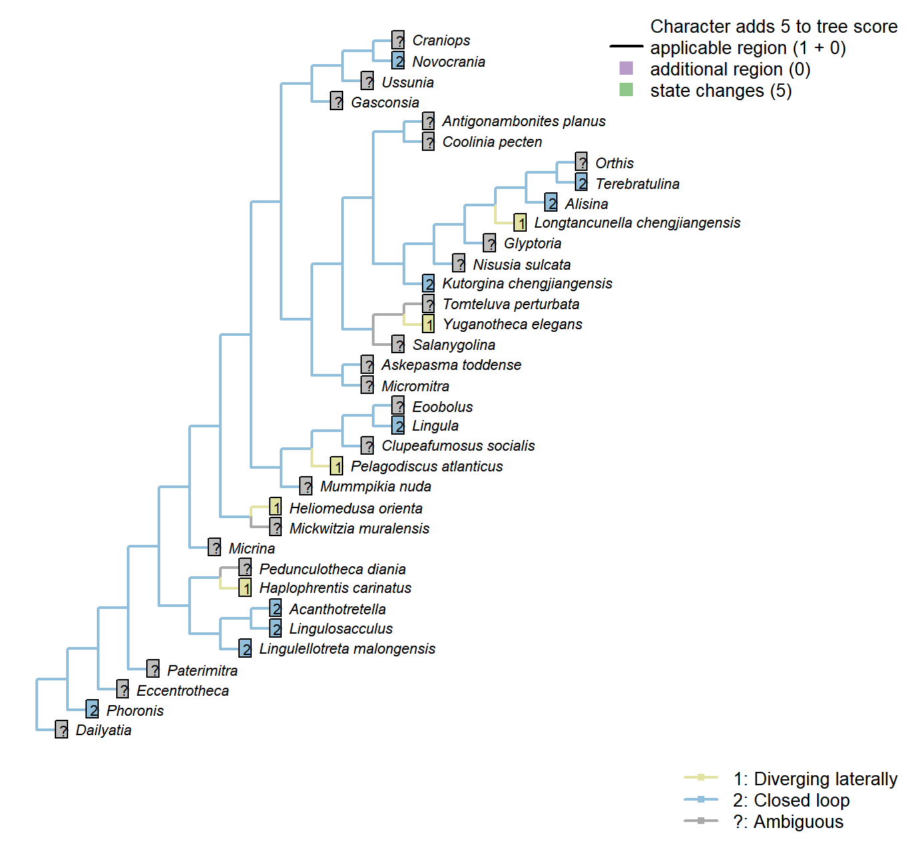
Character 88 : Lophophore: forms closed loop
1: Diverging laterally
2: Closed loop
Transformational character.
Whereas the lophophore of crown-group brachiopods typically forms a closed loop, those of Haplophorentis and Heliomedusa diverge laterally (Moysiuk et al., 2017).
Namacalathus: The existence of a lophophore is speculative.
Lingulosacculus: Two diverging arms of the lophophore are preserved (Balthasar & Butterfield 2009).
Longtancunella chengjiangensis: Two distinct, diverging arms reconstructed by Zhang et al. 2007.
Nisusia sulcata: No specimens of Nisusia preserve the lophophore.
Lophophore: coiling direction

Character 89 : Lophophore: coiling direction
1: Anteriad
2: Posteriad
Transformational character.
The lophophore arms of Heliomedusa and Haplophrentis arch posteriad, rather than anteriad as in lingulids. See Z.-F. Zhang et al. (2009); Moysuik et al. 2017.
Phoronis: Coiling in direction of anus (i.e. posteriad).
Acanthotretella: Arms proceed anteriad before recurving.
Lingulellotreta malongensis: Arms proceed anteriad before recurving.
Pelagodiscus atlanticus: “converging anteriorly and coiling anterior to the body cavity” – Z.-F. Zhang et al. (2009).
Lophophore: adjustor muscle

Character 90 : Lophophore: adjustor muscle
0: Absent
1: Present
Neomorphic character.
Following character 55 in Carlson (1995). Not possible to code in most fossil taxa.
Pedunculotheca diania: Preservation not adequate to evaluate presence or absence of this muscle.
Micrina: Preservation not adequate to evaluate presence or absence of this muscle.
Paterimitra: Preservation not adequate to evaluate presence or absence of this muscle.
Namacalathus: Preservation not adequate to evaluate presence or absence of this muscle.
Eccentrotheca: Preservation not adequate to evaluate presence or absence of this muscle.
Haplophrentis carinatus: Preservation not adequate to evaluate presence or absence of this muscle.
Lingulosacculus: Preservation not adequate to evaluate presence or absence of this muscle.
Phoronis: Following coding for higher taxon in Carlson (1995), appendix 1, character 55.
Tomteluva perturbata: Preservation not adequate to evaluate presence or absence of this muscle.
Mummpikia nuda: Preservation not adequate to evaluate presence or absence of this muscle.
Coolinia pecten: Preservation not adequate to evaluate presence or absence of this muscle.
Kutorgina chengjiangensis: Preservation not adequate to evaluate presence or absence of this muscle.
Salanygolina: Preservation not adequate to evaluate presence or absence of this muscle.
Dailyatia: Preservation not adequate to evaluate presence or absence of this muscle.
Lingula: Following coding for higher taxon in Carlson (1995), appendix 1, character 55.
Acanthotretella: Preservation not adequate to evaluate presence or absence of this muscle.
Heliomedusa orienta: Preservation not adequate to evaluate presence or absence of this muscle.
Longtancunella chengjiangensis: Preservation not adequate to evaluate presence or absence of this muscle.
Lingulellotreta malongensis: Preservation not adequate to evaluate presence or absence of this muscle.
Askepasma toddense: Preservation not adequate to evaluate presence or absence of this muscle.
Micromitra: Preservation not adequate to evaluate presence or absence of this muscle.
Nisusia sulcata: Preservation not adequate to evaluate presence or absence of this muscle.
Pelagodiscus atlanticus: Following coding for higher taxon in Carlson (1995), appendix 1, character 55.
Novocrania: Following coding for higher taxon in Carlson (1995), appendix 1, character 55.
Terebratulina: Following coding for higher taxon in Carlson (1995), appendix 1, character 55.
Antigonambonites planus: Preservation not adequate to evaluate presence or absence of this muscle.
Alisina: Preservation not adequate to evaluate presence or absence of this muscle.
Orthis: Preservation not adequate to evaluate presence or absence of this muscle.
Gasconsia: Preservation not adequate to evaluate presence or absence of this muscle.
Glyptoria: Preservation not adequate to evaluate presence or absence of this muscle.
Clupeafumosus socialis: Preservation not adequate to evaluate presence or absence of this muscle.
Yuganotheca elegans: Preservation not adequate to evaluate presence or absence of this muscle.
Prominent pharynx
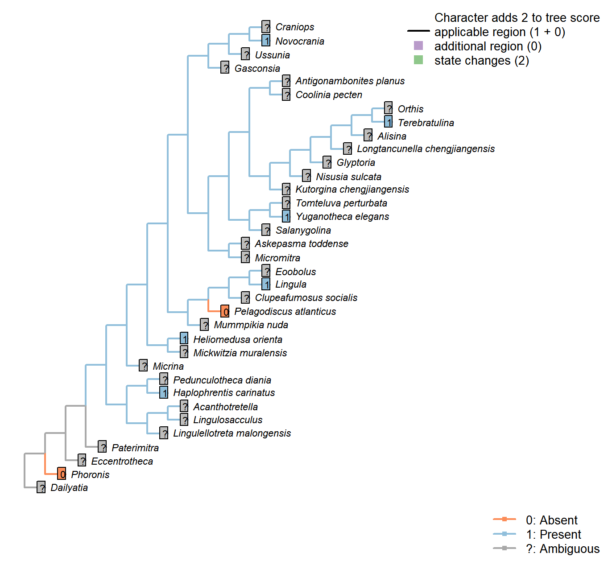
Character 91 : Prominent pharynx
0: Absent
1: Present
Neomorphic character.
Hyoliths exhibit a prominent protrusible muscular pharynx at the base of the lophophore (Moysiuk et al., 2017); no equivalent feature is observed in brachiopods.
Heliomedusa orienta: Corresponding to the “neck” of the vase-shaped visceral cavity reported by Z.-F. Zhang et al. (2009).
Yuganotheca elegans: Possibly present, following interpretation of mouth (see fig. 2c, d in Z.-F. Zhang et al. (2014)).
Anus

Character 92 : Anus
1: Absent: digestive tract is blind sac
2: Present: through-gut
Transformational character.
The digestive tract may either constitute a blind sac, or a through gut with anus.
Kutorgina chengjiangensis: Although “the possibility of a blind ending may not be completely eliminated […] the weight of evidence […] leads us to reject the possibility of a blind-ending intestine” – Zhang et al. 2007, p. 1399.
Glyptoria: Scored according to familial level feature.
Anus: migration

Character 93 : Anus: migration
0: Not migrated: straight gut with posterior anus
1: Migrated: anus has migrated posteriad to create U-shaped gut
Neomorphic character.
“The relative position of the mouth and anus in the larvae of brachiopods and phoronids is similar: posterior anus and anterior mouth” – Williams et al. (2007), p. 2884.
Kutorgina chengjiangensis: “Five specimens have an exceptionally preserved digestive tract, dorsally curved, with a putative dorso-terminal anus located near the proximal end of a pedicle” – Zhang et al. 2007.
Terebratulina: “In rhynchonelliforms, the gut curves somewhat into a C-shape and the (blind) anus becomes posteroventral in position.” – Williams et al. (2007),
p. 2884.
Anus: migration: within ring of tentacles

Character 94 : Anus: migration: within ring of tentacles
1: Not within ring of tentacles
2: Anterior - within ring of feeding tentacles
Transformational character.
A migrated anus may be located laterally or within the lophophore ring (as in entoprocts).
Kutorgina chengjiangensis: “Presumed to terminate in a functional anus located near the proximal end of the pedicle.” – Zhang et al. 2007.
Anus: migration: position

Character 95 : Anus: migration: position
1: Left
2: Right
3: Dorsally
4: Ventrally
Transformational character.
If the anus is not within the ring of tentacles, in which direction is it oriented?.
Haplophrentis carinatus: Opening to the right – see figures 1, 3, and extended data 5 in Moysiuk et al. (2017). The text states in error that the anus is to the left of the midline.
Lingulosacculus: “This same arrangement occurs in L. nuda, with the looped dark line tracking the same course as the exceptionally preserved guts of Chengjiang lingulellotretids, including the median position of its posterior loop and the sharp right turn as it exits the posterior extension of the ventral valve” (Balthasar et al.,2009, p.310).
Kutorgina chengjiangensis: “Five specimens have an exceptionally preserved digestive tract, dorsally curved, with a putative dorso-terminal anus located near the proximal end of a pedicle” – Zhang et al. 2007.
Lingula: “In the lingulids, the [intestine] follows an oblique course anteriorly to open at the anus on the right body wall.” – Williams (1997), p. 89.
Longtancunella chengjiangensis: “The intestine extends posteriorly, and then turns right to continue as a tortuous strand, finally terminating at the latero-median position of the anterior body wall” – Zhang et al. 2007.
Lingulellotreta malongensis: “finally terminating in an anal opening on the right anterior
body wall” (Zhang et al., 2007, p.66).
Terebratulina: “In rhynchonelliforms, the gut curves somewhat into a C-shape and the (blind) anus becomes posteroventral in position.” – Williams et al. (2007),
p. 2884.
Yuganotheca elegans: The identification of the “very poorly impressed possible anus at the lateral side of the anterior body wall” is not yet confident, so this character is coded as not presently available.
References
Brazeau, M. D., Guillerme, T., & Smith, M. R. (2017). Morphological phylogenetic analysis with inapplicable data. bioR\(\chi\)iv. doi:10.1101/209775
Holmer, L. E., Skovsted, C. B., Brock, G. A., Valentine, J. L., & Paterson, J. R. (2008), 4, 724–728.
Streng, M., Butler, A. D., Peel, J. S., Garwood, R. J., & Caron, J.-B. (2016). A new family of Cambrian rhynchonelliformean brachiopods (Order Naukatida) with an aberrant coral-like morphology, 59(2), 269–293.
Williams, A., Carlson, S. J., Brunton, C. H. C., Holmer, L. E., Popov, L. E., Mergl, M., … Wright, A. D. (2000). Brachiopoda. Linguliformea, Craniiformea, and Rhynchonelliformea (Vol. 2, pp. 1–919).
Bassett, M. G., Popov, L. E., & Holmer, L. E. (2001). Functional morphology of articulatory structures and implications for patterns of musculature in Cambrian rhynchonelliform brachiopods, 163–176.
Williams, A., Racheboeuf, P. R., Savage, N. M., Lee, D. E., Popov, L. E., Carlson, S. J., … Jia-Yu, J.-R. (2007). Part H, Brachiopoda (Revised), 6, 2321–3226.
Balthasar, U. (2008). Palaeontology, 51, 263–279. doi:10.1111/j.1475-4983.2008.00754.x
Balthasar, U. (2004), 37(4), 381–400.
Benedetto, J. L. (2009), 83(3), 393–405.
Williams, A. (1997). Part H. Brachiopoda. Revised. Volume 1: Introduction.
Dewing, K. (2001). Hinge modifications and musculature of strophomenoid brachiopods: examples across the Ordovician-Silurian boundary, Anticosti Island, Quebec, 38, 125–141.
Williams, A., Brunton, C. H. C., & Carlson, S. J. (2006). Rhynchonelliformea (part), 5, 1689–2320.
Williams, A., Carlson, S. J., Brunton, C. H. C., Holmer, L. E., & Popov, L. E. (1996). A Supra-Ordinal Classification of the Brachiopoda, 351(1344), 1171–1193.
Moysiuk, J., Smith, M. R., & Caron, J.-B. (2017). Hyoliths are Palaeozoic lophophorates, 541(7637), 394–397.
Dzik, J. (1980), 102(3), 223–233.
Bassett, M. G., & Popov, L. E. (2017), 50(4), 504–510. doi:10.1111/let.12204
Holmer, L. E., Stolk, S. P., Skovsted, C. B., Balthasar, U., & Popov, L. (2009), 52(1), 1–10.
Chen, J.-y., Huang, D.-y., & Chuang, S.-H. (2007), 81(1), 38–47.
Zhang, Z.-F., Li, G.-X., Holmer, L. E., Brock, G. A., Balthasar, U., Skovsted, C. B., … Shu, D.-G. (2014). An early Cambrian agglutinated tubular lophophorate with brachiopod characters, 4(4682).
Larsson, C. M., Skovsted, C. B., Brock, G. A., Balthasar, U., Topper, T. P., & Holmer, L. E. (2014), 57(2), 417–446.
Zhang, Z.-F., Li, G.-X., Emig, C. C., Han, J., Holmer, L. E., & Shu, D.-G. (2009), 42(5), 649–661.
Ushatinskaya, G. T. (2016). Protegulum and brephic shell of the earliest organophosphatic brachiopods, 50(2), 141–152.
Cooper, G. A. (1976). Lower Cambrian Brachiopods from the Rift Valley (Israel and Jordan), 50(2), 269–289.
Rowell, A. J., & Caruso, N. E. (1985), 59(5), 1227–1242.
Skovsted, C. B., Betts, M. J., Topper, T. P., & Brock, G. A. (2015), 48(1), 1–117.
Holmer, L. E., Skovsted, C. B., Larsson, C. M., Brock, G. A., & Zhang, Z. (2011). First record of a bivalved larval shell in Early Cambrian tommotiids and its phylogenetic significance, 54(2), 235–239.
Bassett, M. G., Popov, L. E., & Egerquist, E. (2008). Early ontogeny of some Ordovician-Silurian strophomenate brachiopods: Significance for interpreting evolutionary relationships within early Rhynchonelliformea, 54, 13–20.
Jin, Y.-G., & Wang, H.-Y. (1992), 24, 35–49.
Skovsted, C. B., & Peel, J. S. (2010). Early Cambrian brachiopods and other shelly fossils from the basal Kinzers Formation of Pennsylvania, 84(4), 754–762.
Watkins, R. (2002), 76(1), 185–186.
Skovsted, C. B., Brock, G. A., Topper, T. P., Paterson, J. R., & Holmer, L. E. (2011), 54, 253–286.
Holmer, L. E., & Caron, J.-B. (2006). A spinose stem group brachiopod with pedicle from the Middle Cambrian Burgess Shale, 87, 273–290.
Balthasar, U., Cusack, M., Faryma, L., Chung, P., Holmer, L. E., Jin, J., … Popov, L. E. (2011). Relic aragonite from Ordovician-Silurian brachiopods: Implications for the evolution of calcification, 39(10), 967–970.
Balthasar, U. (2007). An early Cambrian organophosphatic brachiopod with calcitic granules, 50(6), 1319–1325.
Kouchinsky, A. V. (2000). Skeletal microstructures of hyoliths from the Early Cambrian of Siberia, 24(2), 65–81.
Zhang, Z.-L., Zhang, Z.-F., & Wang, H.-Z. (2016). Epithelial cell moulds preserved in the earliest acrotretid brachiopods from the Cambrian (Series 2) of the Three Gorges area, China, 138(4), 455–466.
Skovsted, C. B., & Holmer, L. E. (2003), 48(1), 1–20.
Holmer, L. E. (1989). Middle Ordovician phosphatic inarticulate brachiopods from Västergötland and Dalarna, Sweden, 26.
Cusack, M., Williams, A., & Buckman, J. O. (1999). Chemico-structural evolution of linguloid brachiopod shells, 42(5), 799–840.
Harper, D. A. T., Popov, L. E., & Holmer, L. E. (2017). Brachiopods: origin and early history, 60, 609–631.
Butler, A. D., Streng, M., Garwood, R., Lowe, T., & Holmer, L. E. (2012).
Zhuravlev, A. Y., Wood, R. A., & Penny, A. M. (2015). Ediacaran skeletal metazoan interpreted as a lophophorate, 282(1818), 20151860.
Carlson, S. J. (1995). Phylogenetic relationships among extant brachiopods, 11, 131–197.
Ruppert, E. E., Fox, R. S., & Barnes, R. D. (2004) (p. 990).
Freeman, G., & Lundelius, J. W. (1999). Changes in the timing of mantle formation and larval life history traits in linguliform and craniiform brachiopods, 32, 197–217.
Hu, S.-X., Zhang, Z.-F., Holmer, L. E., & Skovsted, C. B. (2010). Soft-part preservation in a linguliform brachiopod from the lower Cambrian Wulongqing Formation (Guanshan Fauna) of Yunnan, South China, 55(3), 495–505.
Hou, X.-G., Siveter, D. J., Siveter, D. J., Aldridge, R. J., Pei-yun, P.-C., Gabbott, S. E., & Purnell, M. A. (2017). Brachiopoda.
Emig, C. C. (1992). Functional disposition of the lophophore in living Brachiopoda, 25(3), 291–302.